Motor Control
Chapter 10 of 19Introduction
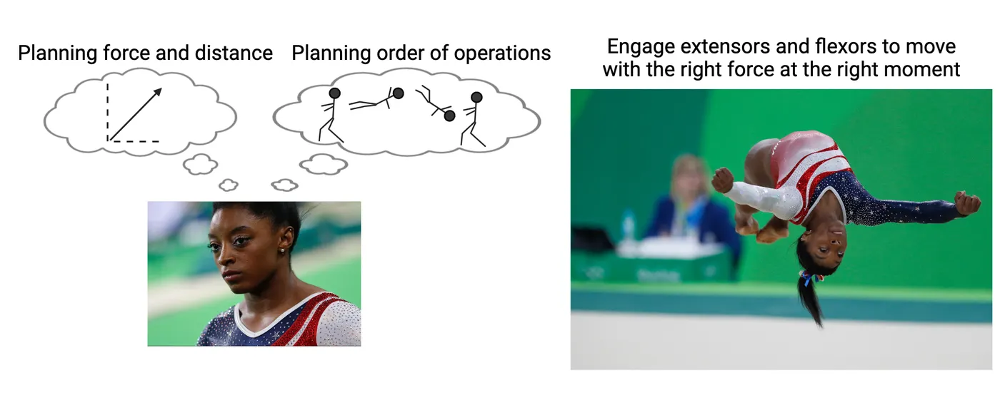
Creating movements we want to make is a critical part of almost every moment of our lives. At its root, moving how we want is just contraction and relaxation of skeletal muscles. But achieving a smooth, intentional movement requires amazingly sophisticated coordinattion. Consider for a moment the complexity of a gymnastic flip executed by Ms. Simone Biles (see this figure).
- Before execution, a gymnast needs to visualize her whole planned launch process, including all twists and bends during flight, and the finalizing movements that will stick the landing. She will anticipate how it will feel, and her brain will calculate timing, forces, and angles of movements subconsciously.
- During the exercise, some skeletal muscles will be directly under the gymnast’s control. Ms. Biles will quickly engage her muscles to contract and relax to control her movements, executing her plan from start to finish.
- While Ms. Biles consciously directs some of her muscles, most of her movement is actually reflexive. Behind the scenes of conscious awareness, her nervous system will be actively correcting subtle shifts in weight and strain that she may not be aware of and engaging habitual movements in some limbs. This subconscious movement system is essential. First, it lets her focus her attention on the limbs and movements she deems important. Second, it helps her execute those subconscious movements better—if she thinks too much about them, they actually won’t happen correctly, resulting in a potentially painful fall.
Ms. Biles does what may feel impossible to many of us, but those movements are possible when the nervous system learns to support them. It is possible because, at their root, the flips and twists that Ms. Biles executes rely on pieces of the nervous system that are shared across humans. In this chapter, we will be taking a trip through the contributing systems that support all these movement feats, including those we rarely consider because they seem to happen so automatically. We will explore the mechanisms involved when the nervous system implements motor movements by activating specific muscle groups. We will also examine earlier stages in the process such as how the brain modulates and refines movements and how it organizes and plans movements. Along the way, we will consider a variety of diseases that involve dysfunction in motor systems and interventions that may help treat those diseases.
10.1The Physiological Actions Implementing Movement – Contraction of Muscles
By the end of this section, you should be able to
- Explain the components of a muscle from the individual muscle fiber to their combination.
- Distinguish the roles of actin and myosin, troponin, and tropomyosin, and associating those molecules with the overall construction of the sarcomere along with their roles in establishing a pulling force.
- Describe the process of skeletal muscle activation into contraction from their initial depolarization till the establishment of the pulling force, with a focus on the energy utilization along with fiber-type specialties.
- Explain the differential contribution of motor units to the distinction of the two big-picture force generation mechanisms: The activation of each individual muscle fiber and accumulation of more muscle fiber contributions.
- Differentiate between agonist, antagonist, and synergistic muscles, distinct fiber type contractile properties, and their contributions to movement.
- Characterize muscle cramps and their sources and illustrates how rigor mortis sets in following death in the context of the molecular components of the muscle.
Disagreement among experts about what constitutes a single muscle leaves a lack of consensus about how many there are. Skeletal muscles can exist in a variety of shapes and sizes, producing diverse quotes of total numbers across the literature. Those advocating higher numbers point to increased movement versatility in select regions where simple opposing pairs can’t define the movement (face, tongue). A rough approximation would be 640 total muscles arranged in antagonistic pairs with one muscle bending a limb joint and the other involved in its extension. Each muscle is composed of many muscle cells (fibers) capable of contraction with diverse outcomes depending on their attachments. In this section we will examine the structure of muscle fibers and consider the mechanisms that control them.
What constitutes muscle cells and their contractile elements?
To reach our goal here, it is important to envision the whole and the functional system we’re discussing. Neural signals need to be sent from their sources in the spinal cord or brainstem out to merge with sets of skeletal muscles where these neurons release neurotransmitter and engage contractions. Neurotransmitter release happens at the terminals of these motoneurons, where it then binds to receptors at distinct locations constituting “the muscle.” This binding initiates a cascade of events that leads to muscle contraction, garnering different amounts of force as needed for actions. This phenomenon involves the actions of several players whose names and roles will now be more specifically delineated. Knowing the players will help to understand how the team wins desired actions with intelligent sophistication.
The individual muscle cell is called a muscle fiber, or myofiber. Myofibers arrange themselves in parallel to add cooperative force, or in series (connected end-to-end) to provide length so contraction velocity can build, by accumulating themselves between tendon attachments. Muscle to sarcomere shows how a muscle mass is composed of multiple muscle fibers (arranged in parallel or series).
![Diagram with overview of muscle structure. Top shows a whole muscle, then zoom in on a single muscle fiber, then zoom in on myofibril, which is shown as a tube with repeating line patterns. The core pattern is labeled the sarcomere. Zoom in on the sarcomere shows a thick middle line (myosin filament) with forked thin lines (actin filament) on either side. Zoom in on where thick and thin filament are closest shows a globular myosin head reaching near the thin filament. The thin filament, which appears as a twisted string of actin monomers, is wrapped by a thinner red line (tropomyosin), which has globular proteins (troponin) resting on it at every twist of the thin filament.](../assets/textbook/img/Image-10.08_Muscle-to-sarcomere.webp)
Individual myofibers can be several centimeters in length and are typically about 80μm in diameter. Each myofiber or muscle fiber contains multiple myofibrils. Myofibrils are elongated rods composed of repeating patterns of proteins. These proteins provide the basis of contraction due to being made up of components that can be induced by the cascade following neurotransmitter receptor activation to pull against each other, shrinking the internal mass, and pulling connected body parts closer together. The more myofibrils packed into a muscle fiber, the more force that muscle fiber can produce. The repeating protein patterns of myofibrils create darker and lighter bands that are visible when looking at muscles. Therefore, skeletal muscles are called "striated."
Within the bundles of myofibrils, the repeating protein patterns represent multiple contractile units called sarcomeres. Several sarcomeres repeat in series along the length of a myofiber. The lower half of Muscle to sarcomere shows how each sarcomere is bounded on the outside by a Z-disk, into which the tail ends of actin "thin" filaments embed, holding them tightly. Actin are composed of actin protein monomers strung together and wrapped around each other in double helixes. At each full cycle along the helix of each actin filament, there resides a binding site for myosin that is typically covered by tropomyosin, which is a long filamentous peptide chain following the actin helix around each curve.
The actin/tropomyosin filaments make up the "thin filaments" of the sarcomere. Between the protruding strands of actin/tropomyosin, in a separate bundle held in place by the M-line in the middle of the sarcomere and thin strands of titin at either end, there are bunches of outward-facing myosin. These bundles end up with globular heads of myosin bulging out from the bundle at regular small intervals. The remaining portions of myosin are buried in a way that appears like twisted microscopic grape vines (fiber represented by vine, and grapes representing globular heads, middle portion of blowup in Muscle to sarcomere). These myosin bundles extend from the center and comprise "thick" filaments. Finally, along the actin/tropomyosin thin filaments, and at regular intervals near the myosin binding sites, the troponin molecules are found to be attached to both the actin and the tropomyosin (shown in the smaller detail box at the bottom of Muscle to sarcomere).
How does a sarcomere generate contraction?
The basic contraction action of a sarcomere is a repeating cycle in which the myosin heads grab and crawl along the actin/tropomyosin filaments from one binding site to the next, pulling the Z-disks closer together (see Actin myosin contraction cycle, and watch an animation). This process involves the formation and breakage of cross-bridges between the myosin globular heads and the binding sites along each turn of the actin alpha-helix, initially covered by tropomyosin. To envision how this looks across the sarcomere, imagine the whole thick filament is a caterpillar, its feet lifting from the leaf (actin) and moving forward while others remain planted for stability. While some actin sites are bound by globular myosin heads (caterpillar feet on the leaf), other globular heads are dissociating and thrusting forward to bind again (caterpillar feet lifted off the leaf). This way, the myosin chain pulls actin and its tethered Z-discs inward.
![A cycle diagram of the actin-myosin interaction that forms the cross-bridge cycle. The thin filament, which appears as a twisted string of actin monomers, is wrapped by a thinner red line (tropomyosin), which has globular proteins (troponin) resting on it at every twist of the thin filament. The changes in this relationship are: 1. ADP- bound myosin head is 'cocked' and ready to bind to actin. 2. In presence of Ca2+ , Ca2+ binds to troponin, exposing binding sites for myosin. 3. The bound myosin rotates its head, producing a 'power stroke’. 4. ATP molecule binds to the myosin head. 5. Actin and myosin detach.](../assets/textbook/img/Image-10.09_Actin-myosin-contraction-cycle.webp)
So how is this cycle controlled? Our muscles don't just contract randomly. They contract when our motor neurons tell them to. Calcium is the critical component that controls when this cycle can happen. As described above, myosin grabs on to actin, sticking to binding sites on the actin protein. Without calcium present, those binding sites are blocked by tropomyosin. In response to an upstream action potential in a motor neuron, calcium is released inside the muscle cell. The calcium binds with troponin. Calcium-bound troponin changes shape and acts as a wedge, prying the tropomyosin strand away from the actin strand (Step 2 in Actin myosin contraction cycle). This shift exposes the myosin binding sites on actin.
Once myosin binds with actin, myosin initiates the "power stroke," changing its shape so as to pull the actin chain toward the center of the sarcomere (Step 3). At the end of the power stroke, an ADP molecule falls off the myosin and an ATP binds to the myosin head instead (Step 4). The ATP binding changes the shape of myosin again, causing it to fall off the actin binding sites (Step 5). When the ATP gets broken back down into ADP + phosphate, the myosin relaxes back to its original position (Step 1). If calcium is present, the cycle can repeat. Though we show this cycle at one specific actin-myosin pair, keep in mind that it occurs throughout the sarcomere, at many sites of potential actin-myosin contact (i.e. the many legs of the caterpillar).
Contractile force entails two distinct processes: shortening and lengthening. This seems counter-intuitive. Isn't "contraction," by definition, "shortening?" Let's clarify by considering the difference between lifting a bowling ball versus catching a bowling ball. The experience of lifting a bowling ball is of course quite different than catching a bowling ball tossed to you. Lifting this ball requires establishing sufficient contractile force to initiate motion upward with muscles in the arms. Catching a bowling ball mostly involves slowing the ball's trajectory or momentum as it moves along rather than immediately reversing its movement. This is where "contractions" differ between shortening (lifting the ball) and lengthening (catching the ball). When the cycling of cross-bridges and power strokes produce sufficient force to counteract a load, muscles can engage shortening contractions and move the limb or body part (we lift the ball). The second category of contraction occurs when contraction force is insufficient to counteract a force, but it can be dampened or slowed down. Often this occurs against the force of gravity, as with the case of catching a bowling ball. The considerable inertia of the heavy bowling ball won't be immediately counteracted by muscle forces in our limbs. Instead, cycling and power strokes produce some counteractive force by attempting to bind and cycle, yet with cross-bridges getting progressively pulled apart like loosening a Velcro seal. These are lengthening contractions. This is analogous to picking up a caterpillar holding on to a leaf, its little legs progressively popping off, slowing your retrieval of the caterpillar. This is important to understand because it describes why some "contractions" seem to be hidden behind the scenes. Like when two muscle-bound competitors are locked in an arm wrestle stalemate, with their gripped hands quivering at the top, one competitor giving a bit (lengthening contraction), with the other gaining a bit (shortening contraction). Similarly, most of our run-of-the-mill movements involve multiple muscles, frequently mixing together shortening and lengthening contractions to achieve our final, desired movement.
From muscle cell action potentials to contractions
Sarcomere contraction relies on a surge of intracellular calcium which is initiated by an action potential that propagates through the muscle fiber. Action potentials of skeletal muscle fibers are initiated by synapsing lower motor neurons (LMNs). LMNs release acetylcholine (ACh) at neuron-muscle synapses called neuromuscular junctions (Neuromuscular junction ).
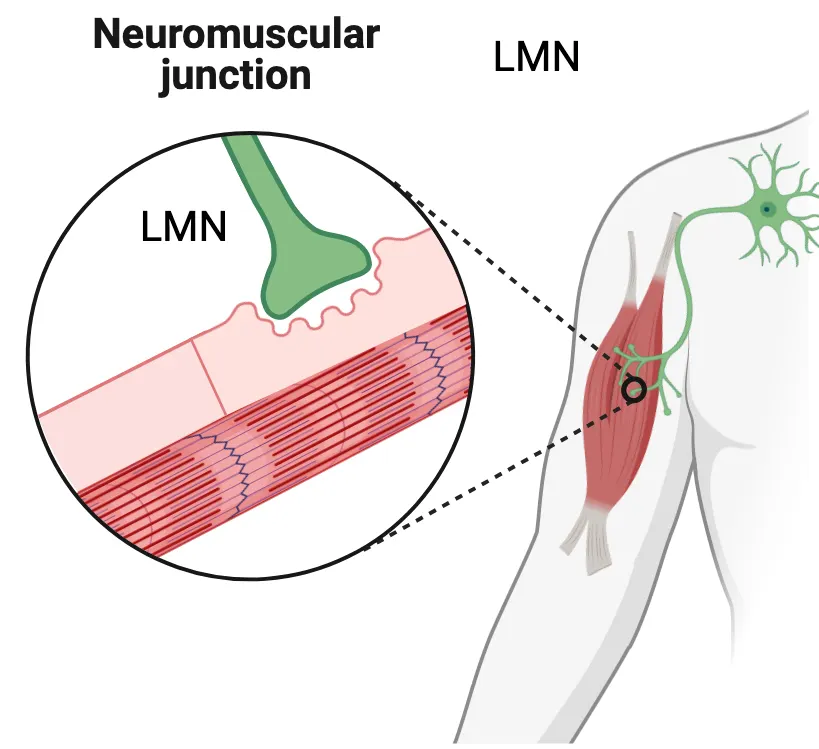
The postsynaptic side of these junctions expresses nicotinic ACh receptors, which gate sodium and therefore initiate depolarization when they open. By comparison to CNS neurons which receive thousands of excitatory inputs requiring summation to reach action potential, motoneurons synapse only once with muscle fibers. Thus, both the selection of that fiber contraction and some control over the contractile force, derives from the bolus of acetylcholine (ACh) released upon the fiber. Motoneurons must therefore release large amounts of acetylcholine to ensure enough stimulation of the fiber and cause contraction. Most movement events need to be quick and snappy, and cannot wait for prolonged summation to occur, such as escape from predators.
Neuromuscular junction mechanism shows how initial sodium influx from ACh receptor activation triggers an action potential in the skeletal muscle. Depolarization of the muscle fiber membrane (sarcolemma) leads to muscle action potentials that are perpetuated across the fiber via voltage-gated sodium channels, much like an action potential travels down an axon (see Introduction). These sodium-based depolarization waves flash across the muscle fiber membrane and cause calcium release from internal stores in the sarcoplasmic reticulum. This calcium initiates contraction by starting the cycle described above.
![Diagram of the intracellular actions at the neuromuscular junction. A presynaptic terminal is shown releasing neurotransmitter (acetylcholine) from vesicles. The transmitter binds to ion channels in the receiving muscle cell. Na+ influx is represented as spreading throughout the muscle. An in-folding of the muscle has a voltage-gated Na+ channel, that opens and allows in more Na+. The sarcoplasmic reticulum is shown releasing Ca2+ into the muscle in response to Na+. The Ca2+ diffuses to a sarcomere below.](../assets/textbook/img/Image-10.10_Neuromuscular-junction-mechanism.webp)
Muscle organization and motor units
The axon of any single motor neuron may branch into several terminals with each forming a synapse on a different muscle fiber. Each muscle fiber, on the other hand, is innervated by a single motoneuron axon. Together, a single motoneuron and the several muscle fibers it communicates with constitute a motor unit (Motor unit). Thus, a muscle is composed of many motor units, each of which may involve many muscle fibers. More force can be generated by activating more motor units that contract in a similar direction.
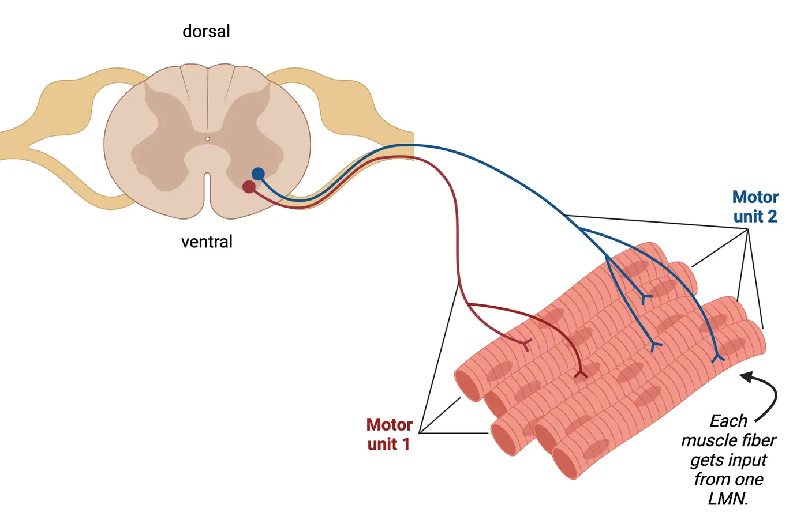
To coordinate movement, muscles are activated in pairs of antagonists that pull in opposite directions (flexors or extensors in limbs). Thus, there are ways to coordinate movements by, for example, swinging an arm outward with an extensor and stopping that motion with the opposing flexor. Stiffening any joint requires simultaneously contracting both antagonists surrounding a joint or body part.
Mechanisms of force generation
There are 2 primary ways that we can control how forcefully a muscle contracts (Ways to increase muscle contraction strength). The first simple mechanism of force generation derives from stimulation of the same motor unit with higher action potential frequency. This causes a higher number of ACh release events at the neuromuscular junction of all that motor unit's muscle fibers. As these ACh release events occur, they cause repeated bursts of sodium influx at the sarcolemma, which then re-initiates calcium bursts and prolongs the capacity of the myosin heads to crawl within each sarcomere involved, recruiting more force.
![2 part diagram: 1) A diagram of a neuron in a coronal spinal cord ventral grey matter connecting to several muscle fibers. Many action potentials are symbolized as happening. Title: Increase firing frequency of alpha motor neuron. 2) Left: A diagram of 2 neurons in coronal spinal cord ventral grey matter connecting to several muscle fibers. Action potentials are symbolized as happening in both neurons. Title: Fire more and larger motor units within 1 muscle. Right: A diagram of 2 neurons in coronal spinal cord ventral grey matter connecting to two different muscles in a human arm. Action potentials are symbolized as happening in both neurons. Title: Recruit more synergistic muscle masses.](../assets/textbook/img/Image-10.26_Ways-to-increase-muscle-contraction-strength.webp)
However, if only the original muscle fibers synapsed by a single motor unit are used, force recruitment is limited. The second way to increase force is to recruit more synergistic motor units. Motor units whose fibers pull in the same direction are called synergistic motor units. There are two ways that these can be activated, and usually they are activated in sequence. First, muscle fibers within the same muscle mass are recruited to increase the force that mass engages (e.g., the biceps engage more and more muscle fibers the heavier the barbell while bicep curls). After all the muscle fibers within a single muscle mass are recruited, then synergistic muscle masses are engaged. We may also engage alternative muscle masses that do not pull in exactly the same direction because of where tendons attach for different defined muscles, but still contribute some force in our desired direction.
You can use both of these force generation mechanisms in your daily motor movements. Typically, your nervous system activates motor units in a sequential order to support much stronger contractions. The first motor units to be activated are smaller, with fewer connected muscle fibers, and the later recruited fibers will be larger and connected to more muscle fibers (explained later). On top of this sequential activation of motor units, your nervous system can increase the firing frequency of the motor neurons controlling the motor units, causing renewed action potentials and therefore more calcium bursts, thus prolonging the contraction for each fiber. By analogy, force generation through more action potentials would be like a tug-of-war team pulling harder and harder, while the second method of recruiting more motor units would be like adding more larger and stronger members to the team.
Summary
Effector skeletal muscles move limbs and body parts in desired directions by pulling in a coordinated manner, typically in conjunction with antagonistic partners pulling in opposite directions. To accomplish the pulling, motor neurons synapsing at neuromuscular junctions initiate contractions. Depolarization derived from ACh opening nicotinic ionotropic receptors filters through the muscle fiber from the sarcolemma into the inner core where myofibrils reside, releasing calcium from storage in the sarcoplasmic reticulum. This calcium initiates and maintains a contractile machinery where myosin heads extending from thick filaments pull actin chains inward by forming cross-links and cocking inward, then releasing and re-binding with power strokes until the calcium dissipates. This activity represents a multiple-molecule-coordinated event occurring at different speeds and efficiencies depending on the arrangement of muscle fiber connections to the tendons, and on the efficiency of myosin head cross-bridge cycling. The pulling can either move a limb or slow externally forced movement by eliciting force attempting to counteract loads (e.g., shortening or lengthening contractions). This gets more complex when different antagonist muscles play tug-of-war across joints to produce desired movement speeds, as the same systems are in play. Force increase can be elicited by higher frequency activation of select populations of muscle fibers, or increasingly recruiting larger populations of muscle fibers to pull in synergistic (same) or close to the same directions. Muscles simultaneously pulling in distinct directions tend to produce intermediate movement trajectories between the pull directions. Blood-rich fibers are commonly recruited first. They are more resistant to fatigue. Those utilizing stored glycogen alone for their energy (ATP) source are recruited for final thrusts.Key terms
actin, cramps, cross-bridges, lengthening contraction, lower motoneurons (LMNs), motor unit, myofiber (muscle fiber), myofibril, myosin, neuromuscular junction, overstretching, power stroke, sarcolemma, sarcomere, sarcoplasmic reticulum, shortening contraction, tropomyosin, troponinReferences
Anders, S., Kunz, M., Gehl, A., Sehner, S., Raupach, T., & Beck-Bornholdt, H. P. (2013). Estimation of the time since death--reconsidering the re-establishment of rigor mortis. International Journal of Legal Medicine, 127(1), 127–130. https://doi.org/10.1007/s00414-011-0632-z
Gordon, T. (2020). Peripheral nerve regeneration and muscle reinnervation. International Journal of Molecular Sciences, 21(22), 8652. https://doi.org/10.3390/ijms21228652
Minetto, M. A., Holobar, A., Botter, A., & Farina, D. (2013). Origin and development of muscle cramps. Exercise and Sport Sciences Reviews, 41(1), 3–10. https://doi.org/10.1097/JES.0b013e3182724817
Mukund, K., & Subramaniam, S. (2020). Skeletal muscle: A review of molecular structure and function, in health and disease. Wiley Interdisciplinary Reviews: Systems Biology and Medicine, 12(1), e1462. https://doi.org/10.1002/wsbm.1462
Pette, D., & Staron, R. S. (2000). Myosin isoforms, muscle fiber types, and transitions. Microscopy Research and Technique, 50(6), 500–509. https://doi.org/10.1002/1097-0029(20000915)50:6<500::AID-JEMT7>3.0.CO;2-7
Scott, W., Stevens, J., & Binder-Macleod, S. A. (2001). Human skeletal muscle fiber type classifications. Physical Therapy, 81(11), 1810–1816.
Van Cutsem, M., Duchateau, J., & Hainaut, K. (1998). Changes in single motor unit behaviour contribute to the increase in contraction speed after dynamic training in humans. The Journal of Physiology, 513(Pt 1), 295–305. https://doi.org/10.1111/j.1469-7793.1998.295by.x
Practice The multiple-choice and fill-in-the-blank questions for this section are interactive and live on OpenStax, so they are not carried here: open the book on openstax.org.
10.2Eliciting Contractions from Lower Levels – Lower Motoneurons and Reflex Arcs
By the end of this section, you should be able to
- Distinguish between upper and lower motoneurons and explain the concept of a motor unit in this context.
- Enumerate the components of the neuromuscular junction with roles for the basal laminae, junctional folds, acetylcholinesterase, and nicotinic receptors.
- Explain the basis of classic myasthenia gravis and how it compromises muscle activity.
- Explain the two processes by which force can be increased based on LMN activity and why the more complex “recruitment of more” follows the size principle to elevate force.
- Describe special organizations and locations in the spinal cord supporting key LMN distributions in ventral grey in relation to limbs and body parts.
- Describe what central pattern generation means and how this activity is somewhat like, yet somewhat different from, reflex circuitry.
- Explain the basis of proprioceptive feedback from spindle fibers and Golgi tendon organs and how those systems integrate into reflex control of movement by exerting lower-level control at the spinal level.
Neuroscientists divide the motor system into lower levels and upper levels for clinical purposes. The implementation of final contractions occurs at lower, output levels, while the organization of what to do when (given current circumstances) occurs at upper CNS levels privy to sensations and goals. Distinct body parts are organized in cortical regions described as primary motor (M1) which sends most of the motor commands into descending axon tracts that eventually inform the posterior spinal and brainstem regions and their reflex-related circuitry how we desire to behave. The M1 area is not the only region capable of engaging major movement decisions. Therefore, all neurons making up regions that typically reside in higher or more rostral locations and coordinate the decisions to move based on decision-making circuitry are called upper motor neurons (UMNs). By contrast, all neurons that reside in more caudal brainstem or spinal regions and project directly to synapse on muscles are referred to as lower motor neurons (LMNs). LMNs implement the contractions due to their contact with muscles, and UMNs essentially decide when to engage or which muscles to engage to accomplish an inspired goal.
This section focuses on the LMN system, discussing the mechanisms associated with LMN activation of muscles. LMNs take care of lower implementation. They are defined as all motor neurons extending from the central nervous system (typically the brainstem and spinal cord) and directly connecting with effector muscles. In this section, we will be discussing how LMNs are organized, how their activity drives muscles, and what are the reflexive feedback mechanisms allowing for local control and reflexes. We will discuss the upper levels of control in the following section.
LMN organization
Spinal cord LMNs are responsible for most of our limb and trunk movements. Within the spine, local LMNs reside in the ventral (bottom or stomach-facing) portion of an H-like overall structure comprising the middle portion of the spine. The dorsal (upper or back-facing) portion of spinal grey contains intermediate neurons responsible for relaying sensory information (see LMNs in the spinal cord). Importantly, the ventral region of this spinal grey is organized somatotopically in relation to the outer body, so medially located LMNs control medial trunk musculature, and lateral LMNs near limbs control the limb joints progressively (shoulder → elbow → wrist → fingers most lateral).
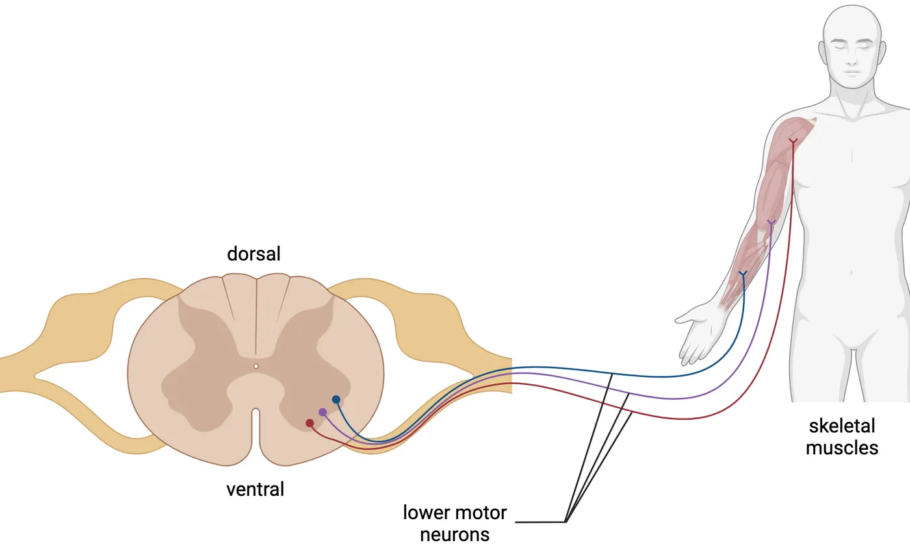
Moving our heads involves LMNs within various brainstem nuclei, which target our face, eyes, tongue, and other such movements via cranial nerves exiting specific skull foramen (special holes, see Cranial nerves).
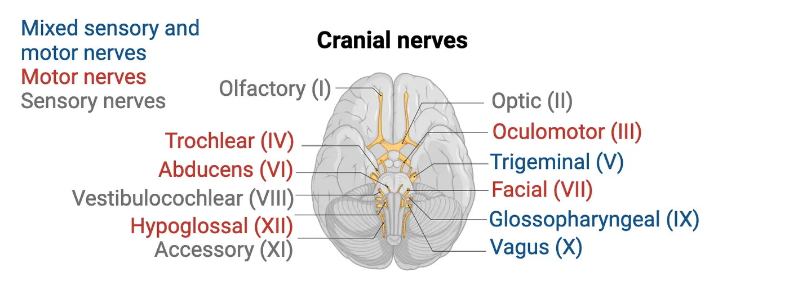
LMNs activate the neuromuscular junction
LMN synapses on muscle fibers occur through neuromuscular junctions (NMJs, Neuromuscular junction mechanism). NMJs from the axon collaterals of a single LMN are activated simultaneously within muscle masses, larger motor units activating more, and smaller less, yielding differential force. Within the NMJ, activated LMN axon terminals release ACh across the synaptic gap and through a leaky surrounding protein matrix encompassing muscle cells called the basal laminae, and onto the postsynaptic surface of a muscle fiber (sarcomere arrangement, see Muscle to sarcomere and this animation). A motor unit, as was introduced in The Physiological Actions Implementing Movement – Contraction of Muscles, is a LMN and all the individual muscle fibers it synapses on. Smaller motor units activate fewer muscle fibers. They get activated in the early movement stages until more force becomes necessary for the current load. Then larger motor units are recruited.
Skeletal muscle ACh receptors, called nicotinic receptors, are ionotropic. When ACh from the LMN presynaptic terminal binds to these nicotinic ACh receptors on muscles, it creates immediate depolarization. Bound and opened nicotinic channels transmit cations across the sarcolemma and depolarize the muscle fiber, triggering action potentials. These receptor constructs reside on top of waves or ridges in the postsynaptic membrane called junctional folds, placing the receptors near the source of ACh travelling across the synapse. ACh remains only briefly after release from motoneurons. Efficient enzymes called acetylcholinesterase residing in the basal laminae (within the synapse; see Neuromuscular junction mechanism) quickly break it down into choline and the acetyl group, preventing perpetual stimulation disconnected from motoneuron activations (see Introduction). More force (e.g., greater muscle contraction) can be coaxed from the activated muscle fibers if the LMN is driven to higher action potential frequencies. Resulting increased ACh will maintain and intensify the cycling and power stroking activity within the fibers.
Problems from Myasthenia Gravis
The autoimmune disease myasthenia gravis significantly interferes with ACh effectiveness in generating muscle action potentials. In its classic form, disruptive antibodies are produced that destroy nicotinic receptors by binding-up their protein components. This diminishes the numbers of binding receptors, so the typical release from one LMN action potential becomes inadequate. This loss of ACh effectiveness delays muscle contraction and disrupts the coordination between contractions triggering actions. The end result is slow/jerky movement or sometimes no movement when patients attempt to move. These negative effects of myasthenia gravis highlight the importance of single LMN synapses per each muscle fiber. Each muscle fiber containing only one neuromuscular junction usually maintains control over when muscles contract. Losing this control also means muscles won’t always activate properly when needed.
Lower motor neurons as motor units and force selection
A key part of controlling the force of muscle contraction is selecting the number and size of motor units to engage. All LMN axon collaterals from a single LMN, whether large or small, target muscle fibers pulling in essentially the same direction. Larger LMNs exhibit thicker and larger axons which innervate more muscle fibers than smaller ones, thereby generating greater pull. We typically start pushing or lifting with smaller motor units, and engage more, larger ones when more force is necessary. We adjust the force required for a task through trial and error. This helps us avoid crushing eggs unintentionally.
Interestingly, larger LMNs require greater intensities of afferent input to reach action potential threshold than smaller. This is because with greater size comes accumulation of leakiness, a phenomenon known as the size principle. When neurons are depolarized towards their threshold for action potential, specific channels open to allow positive charge in. The larger the neuron, the leakier it gets (depolarization doesn't remain in the neuron but quickly dissipates through expansive channels expressed). If a neuron is leaky, activating the motoneuron resembles blowing up a leaky balloon, requiring faster more powerful breath (i.e., faster more powerful descending UMN, stimuli) (see Introduction ).
This set-up, with larger more leaky and smaller less leaky LMNs, is ideal for recruiting motor units. Descending control, where conscious decisions are engaged, derives from the UMNs (to be discussed in the next section). To activate smaller motor units, only small descending UMN activations are necessary, typically occurring with a new effort of unknown load. However, if the load is larger than anticipated, larger motor units are needed. The system needs to adjust to engage more descending input. This size principle gives us control over recruiting these motor units based on how intensely descending UMN stimulation develops because the bigger LMNs need more excitation from upper levels to fire action potentials. Of course, UMNs can also ramp up the activity of already selected LMNs. This descending control governs both mechanisms of force selection introduced in The Physiological Actions Implementing Movement – Contraction of Muscles.
The feedback proprioceptive senses
Before discussing reflex intricacies, we need to describe the proprioceptive sense mechanisms. These mechanisms are technically sensory, but they are also an integral part of movement control (see Introduction). Through these sensors we monitor body or limb positions by the degree of muscle stretch (width of smile or extension of arms) and muscle load, or tension, intensity – even the load of our bodies on our legs.
The sensors for muscle stretch are called spindle fibers or muscle spindles. They are activated by mechanical pull to signal either whether a stretch has occurred, or at what rate stretch is occurring. The sensors for muscle tension, or the loads muscles attempt to counteract, are called Golgi tendon organs. Golgi tendon organs are activated by how much collagen fibers constituting the tendons squeeze down on the terminal sensory endings interwoven among collagen fibers. Their activation therefore reflects the extent of opposing pull between muscle and load. Together, these senses represent proprioception – a self-awareness of where our body is and the forces necessary to get it there.
The Muscle Spindles and related reflexes
Muscle spindles are also called spindle fibers, or generally, stretch receptors (see The muscle movement sensors). To appreciate the function of these receptors, think about kicking a soccer ball at different speeds. Kicking the ball hard requires some momentum in our leg, so we should be able to initially feel our leg further back in space before initiating this swing. The sense of our properly positioned leg comes from stretch signals originating at our leg extensors and hip flexors. The sensory information from muscle spindles let us focus our eyes on finding the goal or teammates rather than looking at our legs during the match.
![2 part diagram: 1 Diagram of muscle spindles. An inset shows bulbs of muscle fiber (spindle) wrapped by an axon fiber, surrounded by 2 muscle fibers. 3 diagrams show the spindle shorten as the surrounding muscle fibers shorten. Below each diagram, line drawings represent firing rates of sensory spindle fibers (rapid for stretched, moderate for relaxed, sparse for contracted and finally rapid again for contracted+gamma firing). 2) Diagram of a golgi tendon organ: neuronal fibers sit in between a mesh of collagen within the tendon at the end of a muscle.](../assets/textbook/img/Image-10.16_The-muscle-movement-sensors.webp)
Proprioception via muscle spindles relies on intrafusal muscle fibers, which are different than the force producing and contracting muscle fibers (discussed in the previous section about contraction strategy) that we can now call extrafusal fibers by comparison. Both intrafusal and extrafusal fibers extend in parallel from one tendon to the other. However, they each have different functions and connect to unique classes of LMNs. Extrafusal fibers engage movement/contraction—they are the muscle fibers that generate force. Intrafusal fibers, in contrast, host spindle fiber stretch receptor mechanisms.
Spindles, which include the specialized sensory fibers wrapping around the middle of intrafusal fibers, are key to sensing stretch. When intrafusal fibers are pulled lengthwise, mechanical receptors open within spindles to elicit depolarization, activating their attached sensory fibers (Hunt, 1990).
Stretch response-based reflexes are plentiful within the spinal cord architecture. When a larger muscle is stretched rapidly and unexpectedly, a reflex mechanism involving feedback from the spinal cord snaps the limb back into place. The knee-jerk reflex is prominent among such stretch reflexes (see Introduction, shown in Knee-jerk reflex). Many of you have probably experienced your doctor producing this during routine check-ups. To elicit this reflex, a clinician hits just below your kneecap with a rubber hammer, impacting the tendon of your leg extender muscle, causing an unexpected stretch. This extensor stretch excites the spindle sensory fiber, which synapses on and excites alpha motor neurons in the spinal cord, which in turn activates leg extensor contractions. Your leg kicks outward. Doctor: Beware!
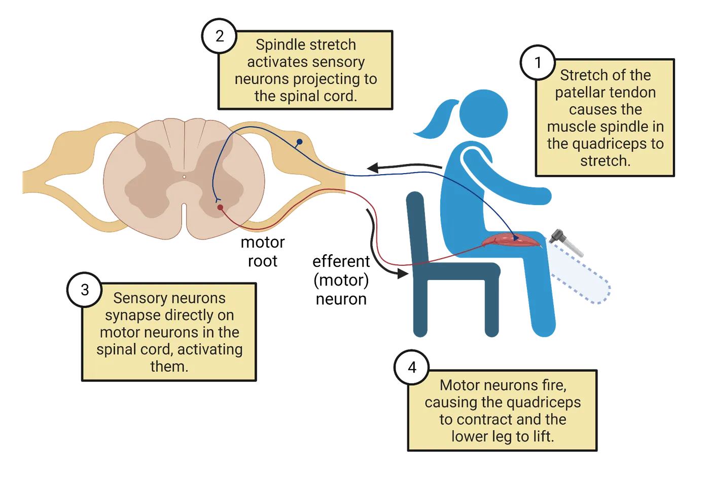
You might wonder why we need this reflex. We don't usually hit ourselves in the knee. But imagine yourself on a lurching boat. Your legs attempt to keep you upright, but you can't keep up with the timing of the waves and create anticipatory movements. Luckily, the knee-jerk reflex responds to waves which might make you fall backward, tightening the extensor muscle and pulling your body forward rather automatically. If you spend time on ships where your muscles do this regularly, you develop sea legs (muscular thighs), unaware of the extra exercise while just standing there.
Though reflexes are somewhat self-contained at the spinal cord level, they also rely on upper motor system input for regulation of their strength. This dependence is quite evident when descending UMN control is absent, as in "spinal" injuries severing the descending systems at the brainstem level. Patients with such injuries show large increases in the intensity of reflexes. This hyperreflexia indicates that descending control interacts intimately with reflex circuitry, usually to keep the degree of reflex responses circumscribed to desired levels but also because UMNs often activate general limb motion through synapsing on spinal reflex circuitry (Frigon and Rossignol, 2008; Adams and Hicks, 2005).
Gamma versus alpha motoneuron system
We have described the extrafusal fibers as contracting to generate force/movement, responding to ACh from LMNs to initiate this force when needed to move our bodies. The LMNs activating those extrafusal fibers are called alpha motoneurons. Separate from the alpha motor neuron system is the gamma motor neuron system. The intrafusal fibers are innervated by an LMN population called gamma motoneurons, whose job is to tighten the intrafusal fibers to ensure the spindles remain sensitive. Mechanoreceptors in spindles only open and produce a signal when the spindles are stretched tight, so it's important for mechanisms to maintain tension on the intrafusal fibers. If they slacken, no signal can be generated. To understand this, imagine that a rubber band is representing the spindle fiber. You've made evenly spaced half-centimeter-apart marks along its length, representing the wrapping curls. If you stretch the rubber band, the marks separate. This represents the action causing a signal to be generated by the spindle fiber. Now allow the band to slacken to shorter than its unstretched length. At this point, the marks don't separate and won't until the band is extended to its original pre-stretched length. Mark separation cannot occur again until tightness is restored, visually representing what gamma motoneurons do to intensify stretch perception. They keep our spindle fibers tight and sensitive when this sensitivity is needed.
The muscle movement sensors demonstrates how gamma motor neuron firing maintains spindle sensitivity as fibers around them contract. A contraction of the main muscle mass would naturally cause the spindle fibers to go slack and stop sending signals. This loss of tension is rectified by gamma stimulation of contraction and tightening of the intrafusal fibers. The ability to maintain sensitivity to stretch despite muscle contraction is, therefore, derived from coactivation of the alpha and gamma systems at unique moments of need. Interestingly, we don't always co-activate alpha and gamma systems. Quick, thrusting movements like waving away a horsefly or throwing a punch are termed ballistic and differ from our more controlled movements in that the gamma motor system does not co-activate with the alpha motoneurons. Instead, the alpha motoneurons initiate a force vector and simply let it fly without attempting to sense the ongoing movement or slow down the trajectory. The important take-home is gamma motoneuron activity increases sensitivity of stretch perception. It is not involved in producing pulling force to move our bodies.
The Golgi Tendon Organs and related reflexes
As its name implies, the Golgi tendon organ receptor for tension or force produced by muscle contraction is buried within the tendons at either end of skeletal muscles. These receptors sense the tension or force produced by skeletal muscles when contractions pull hard, or the lack of force when pull is weak.
There are Golgi tendon organs in every skeletal muscle tendon. Some muscle tension is more subtle and constant than we might imagine. When we lift a barbell, the force generated is proportional to the weights and effects of gravity on them. Not as intuitive but no less imaginable: holding our body up creates tension in the muscles of our legs.
Instead of a stretch opening mechanical ion channels to cause depolarization, in this receptor, a squeeze induces depolarization. Each tendon is made up of multiple collagen fibers weaving into and through each other. The resulting strong, combined tendon fiber withstands the pull forces placed upon it. Rather than wrapping around a single fiber like spindle fibers, Golgi tendon organs sensory endings weave within the matrix of the tendon’s collagen fibers. Just like fingers are squeezed if inserted between the strands of rope twine pulled tight, these Golgi tendon organ end fibers are squeezed by the force produced by the contraction of the muscle fiber, eliciting firing (Stuart et al., 1972). The experience of dancing with others involves holding hands, lifting, and swinging in ways that we’d rather not be interpreted as “too tight,” “too sudden,” or “too fast.” Being subtle with our touch can also avoid accusations of squeezing parts that perhaps should not be squeezed out of context. Feedback from Golgi tendon organs to our lower motor neurons keeps it soft, appropriate, and “let’s just glide this way.”
Collaboration between grip, touch and stretch
Though we considered spindle and Golgi tendon organs separately above, our movements are constantly informed by their integrated proprioceptive feedback. Proprioceptive guidance of our movements can also be supplemented by input from other sensations, such as our touch receptors (see Introduction). To appreciate how touch and proprioception come together to inform complex movement, consider how monkeys swing through trees. This activity also involves considerable descending control from UMNs, but for now we can envision what occurs within our current focus on the lower level. Monkeys swing through trees all the time; it's simply part of daily life. But they require sophistication. To succeed, the monkey needs to hold one branch until it has sufficient grip to switch its body weight to the next branch. Then, it needs to release the previous branch in time with the swing, so it doesn't get stuck holding two branches (awkward). The primate needs a pattern of swing-grab-tighten-hold-let-go. Let's look at all the sensory components needing to be coordinated (Zimny et al., 1989; Lephart et al., 1998; Gilman, 2002; Lephart and Jari, 2002):
- Getting a hand or foot (remember monkeys have hand-like dexterity in both their feet and hands) in proximity to a branch requires hand-eye coordination combining internal representation with stretch proprioception: spindle fibers.
- Initiation of grasping requires recognition of the touch pressure of the new branch in the palm—these receptors are part of your somatosensory system.
- Grasping requires activation of hand-finger muscles via UMNs, and the needed force of the grasp must be calculated via with the monkey's knowledge of the grip necessary to hold its body weight—Golgi tendon organs in the hand/fingers and somatosensory touch receptors in the skin of the hand/fingers.
- Once grip is established, this perception needs to be coordinated with release of the previous branch, via interaction between ascending proprioception and touch from Golgi tendon organs and somatosensory touch receptors; also, via ascending sensory systems providing conscious realization, which feeds back through various UMN systems to the hand and fingers of the previous limb for release or diminishment of force from the grip.
Ideally, these stunningly coordinated events are automated into a motor program habit to allow them to occur in smooth progression. The monkey can attend to the bigger picture towards good (food, conspecifics) and away from bad (predators, angry alpha males). Such a trajectory requires integration of subtle shoulder motions in the swing with visual appreciation of branch options along with following the optic flow to gauge speed. This is a remarkable demonstration of systems coordination!
Summary
Distinguishing between upper and lower motoneurons (UMNs, LMNs) is important to divide the overall action of motor control into the conscious selection and patterning activity (upper) versus the implementation and minor adjustments to maintain bodily status quo (lower). We described how LMNs extend into the periphery to synapse with muscle fibers, and how larger LMNs synapse with more fibers than smaller, thus forming the larger and smaller motor units. Motor units activate connected muscles through neuromuscular junctions relatively simultaneously. Fibers synapsed upon typically pull in the same direction.
LMNs are activated from their central nervous system residence either at the brainstem or spinal cord, either via descending UMNs in the context of conscious intended actions or via reflex arcs creating quick local lower corrective actions while monitoring circumstances with sensory feedback. Within the spinal cord, LMNs are arranged at the ventral spinal grey in a pattern where medial LMNs connect to medial body parts. The more lateral the LMN residence, the more lateral the activated body part (e.g., finger movement most lateral in the cervical cord). Also within the spinal cord: reflex arc circuitry and circuitry supporting central pattern generation coordinate simple levels of locomotion.
Spindle fibers and Golgi tendon organs are the two main sensory feedback systems for muscles. They cover stretch and muscle tension, respectively. Muscle spindles detect stretch via the longitudinal pull on intrafusal muscle fibers, which can be tightened by the gamma motoneuron system to maintain sensitivity at critical moments. Golgi tendon organs detect tension when muscles pull against a load, producing inward pressure by the collagen fibers constituting tendons. They can help ensure a soft touch when needed. Proprioceptive sensory systems also extend into skin vibration and stretch sensations contributing to more complex actions at the lower level.
Key terms
acetylcholinesterase, alpha motoneurons, ballistic, central pattern generators (& generation), collagen fibers (tendon components), extrafusal muscle fibers, gamma motoneurons, Golgi tendon organs, hyperreflexia, intrafusal muscle fibers, junctional folds, knee-jerk reflex, lower motor neurons (LMNs), muscle spindles (spindle fibers), Myasthenia Gravis, nicotinic receptors, proprioception, reflexes, size principle, somatotopically, upper motor neurons (UMNs)References
Aach, M., Cruciger, O., Sczesny-Kaiser, M., Höffken, O., Meindl, R. C., Tegenthoff, M., Schwenkreis, P., Sankai, Y., & Schildhauer, T. A. (2014). Voluntary driven exoskeleton as a new tool for rehabilitation in chronic spinal cord injury: A pilot study. The Spine Journal: Official Journal of the North American Spine Society, 14(12), 2847–2853. https://doi.org/10.1016/j.spinee.2014.03.042
Adams, M. M., & Hicks, A. L. (2005). Spasticity after spinal cord injury. Spinal Cord, 43(10), 577–586. https://doi.org/10.1038/sj.sc.3101757
Ahmed, Z. (2016). Modulation of gamma and alpha spinal motor neurons activity by trans-spinal direct current stimulation: Effects on reflexive actions and locomotor activity. Physiological Reports, 4(3), e12696. https://doi.org/10.14814/phy2.12696
Collins, J. J., & Richmond, S. A. (1994). Hard-wired central pattern generators for quadrupedal locomotion. Biological Cybernetics, 71(5), 375–385. https://doi.org/10.1007/BF00198915
Côté, M. P., Ménard, A., & Gossard, J. P. (2003). Spinal cats on the treadmill: Changes in load pathways. The Journal of Neuroscience: The Official Journal of the Society for Neuroscience, 23(7), 2789–2796. https://doi.org/10.1523/JNEUROSCI.23-07-02789.2003
Dimitrijevic, M. R., Gerasimenko, Y., & Pinter, M. M. (1998). Evidence for a spinal central pattern generator in humans. Annals of the New York Academy of Sciences, 860, 360–376. https://doi.org/10.1111/j.1749-6632.1998.tb09062.x
Frigon, A., & Rossignol, S. (2008). Locomotor and reflex adaptation after partial denervation of ankle extensors in chronic spinal cats. Journal of Neurophysiology, 100(3), 1513–1522. https://doi.org/10.1152/jn.90321.2008
Gilman, S. (2002). Joint position sense and vibration sense: Anatomical organisation and assessment. Journal of Neurology, Neurosurgery, and Psychiatry, 73(5), 473–477. https://doi.org/10.1136/jnnp.73.5.473
Hunt, C. C. (1990). Mammalian muscle spindle: Peripheral mechanisms. Physiological Reviews, 70(3), 643–663. https://doi.org/10.1152/physrev.1990.70.3.643
Klarner, T., & Zehr, E. P. (2018). Sherlock Holmes and the curious case of the human locomotor central pattern generator. Journal of Neurophysiology, 120(1), 53–77. https://doi.org/10.1152/jn.00554.2017
Lephart, S. M., & Jari, R. (2002). The role of proprioception in shoulder instability. Operative Techniques in Sports Medicine, 10(1), 2–4. https://doi.org/10.1053/otsm.2002.29169
Lephart, S. M., Swanik, C. B., & Boonriong, T. (1998). Anatomy and physiology of proprioception and neuromuscular control. International Journal of Athletic Therapy and Training, 3(5), 6–9. https://doi.org/10.1123/att.3.5.6
Michel-Titus, A., Revest, P., & Shortland, P. (2010). Motor systems I: Descending pathways and cerebellum. Chapter 9 In: The nervous system (Second Edition). Maryland Heights, MO: Elsevier, Science Direct. https://doi.org/10.1016/B978-0-7020-3373-5.00009-5
Minassian, K., Hofstoetter, U. S., Dzeladini, F., Guertin, P. A., & Ijspeert, A. (2017). The human central pattern generator for locomotion: Does it exist and contribute to walking?. The Neuroscientist: A Review Journal Bringing Neurobiology, Neurology and Psychiatry, 23(6), 649–663. https://doi.org/10.1177/1073858417699790
Nudo, R. J., & Masterton, R. B. (1990). Descending pathways to the spinal cord, III: Sites of origin of the corticospinal tract. The Journal of Comparative Neurology, 296(4), 559–583. https://doi.org/10.1002/cne.902960405
Patestas, M. A., & Gartner, L. P. (2016). A textbook of neuroanatomy (Second Edition). New Jersey: John Wiley and Sons.
Proske, U. (1997). The mammalian muscle spindle. Physiology, 12(1), 37–42. https://doi.org/10.1152/physiologyonline.1997.12.1.37
Sacks, O. (1987). The disembodied lady. Chapter 3 in: The man who mistook his wife for a hat and other clinical tales. New York: Harper and Row Publishers.
Serrao, M., Spaich, E. G., & Andersen, O. K. (2012). Modulating effects of bodyweight unloading on the lower limb nociceptive withdrawal reflex during symmetrical stance. Clinical Neurophysiology: Official Journal of the International Federation of Clinical Neurophysiology, 123(5), 1035–1043. https://doi.org/10.1016/j.clinph.2011.09.006
Stuart, D. G., Mosher, C. G., Gerlach, R. I., & Reinking, R. M. (1972). Mechanical arrangement and transducing properties of Golgi tendon organs. Experimental Brain Research, 14(3), 274–292. https://doi.org/10.1007/BF00816163
Termsarasab, P., Thammongkolchai, T., & Frucht, S. J. (2015). Spinal-generated movement disorders: A clinical review. Journal of Clinical Movement Disorders, 2, 18. https://doi.org/10.1186/s40734-015-0028-1
Thompson, A. K., Pomerantz, F. R., & Wolpaw, J. R. (2013). Operant conditioning of a spinal reflex can improve locomotion after spinal cord injury in humans. The Journal of Neuroscience: The Official Journal of the Society for Neuroscience, 33(6), 2365–2375. https://doi.org/10.1523/JNEUROSCI.3968-12.2013
Towe, A. L. (1973). Somatosensory cortex: Descending influences on ascending systems. In: Iggo, A. (Ed.), Somatosensory system. Handbook of Sensory Physiology, Vol 2. Berlin, Heidelberg: Springer. https://doi.org/10.1007/978-3-642-65438-1_18
Zimny, M. L., DePaolo, C., & Dabezies, E. (1989). Mechano-receptors in the flexor tendons of the hand. Journal of Hand Surgery (Edinburgh, Scotland), 14(2), 229–231. https://doi.org/10.1016/0266-7681(89)90134-4
Practice The multiple-choice and fill-in-the-blank questions for this section are interactive and live on OpenStax, so they are not carried here: open the book on openstax.org.
10.3Our Brain Gets Involved – Responsibilities of Upper Motor Systems
By the end of this section, you should be able to
- Compile a descriptive story regarding how the following UMN brain structures collaborate with distinct contributions to movement formulation and engagement: Prefrontal and premotor cortices; Cerebellum; Basal ganglia; and Primary Motor cortex (M1)
- Enumerate the regions of control within the homunculus of M1 anatomically along the precentral gyrus.
- Differentiate the complimentary contributions to background motor control from the basal ganglia and cerebellum in terms of muscle contribution selection and the smooth stopping and starting.
- Understand the source, related circuitry, and outward expressions of the following disease states: Cerebellar Ataxia; Huntington’s disease; and Parkinson’s disease.
- Describe how final movement selections are made in M1 according to the findings of Apostolos Georgopoulos and how that translates into a sort of democracy of movement trajectory determination.
In this section, we will explore the contributions of UMN systems to voluntary movements. Progressively, we will discuss ascending signals providing critical decision-making information to UMN areas, and descending implementation signals to the lower areas (brainstem and spinal cord). We’ll address three major cortical areas:
- The prefrontal cortices, the most anterior of movement-related cortices where major executive decisions are made.
- The collection of regions referred to as the premotor cortices (dorsal, ventral, cingulate, supplementary). These coordinate which muscles should be activated when new game plans are formulated, and receive feeds from posterior sensory cortices, the basal ganglia, and the cerebellum through the thalamic way station.
- Finally, we will discuss the primary motor cortex, or M1. We will find that this area continues to compile inputs and formulate final detailed movement decisions prior to sending commands to the LMNs in the brainstem and spinal cord.
Our lower motor systems clearly need guidance if we are ever going to move how we want. In this section, we will learn how the upper motor structures are poised to deliberate, compose, compile, and then direct the lower motor neurons.
The Prefrontal Cortex – Integrating our wants and needs with circumstances
Within the most anterior portions of the cerebral cortex behind our foreheads and over the orbits of our eyes, prefrontal cortices begin the earliest portions of conscious decision-making and are included as motor regions for this reason (see Prefrontal interactions). Willed movements depend on both decisions and integration of emotions and desires within internal representations concerning our circumstances in the world. We need to understand problems we face prior to acting and speaking in response to them, lest our actions be thoughtless or wildly inappropriate. For example, prefrontal lobotomy patients are unable to plan for their futures, and fail to self-monitor as actions occur (Milner & Petrides, 1984; Malloy et al., 1993; Chirchiglia et al., 2019). This clearly defines these cortical regions as the locus of deciding what to do. As indicated in Prefrontal interactions, this area receives necessary decision-making information from many other areas. After processing, it sends this information to multiple regions, providing both the feeling of the decision and the action chosen. 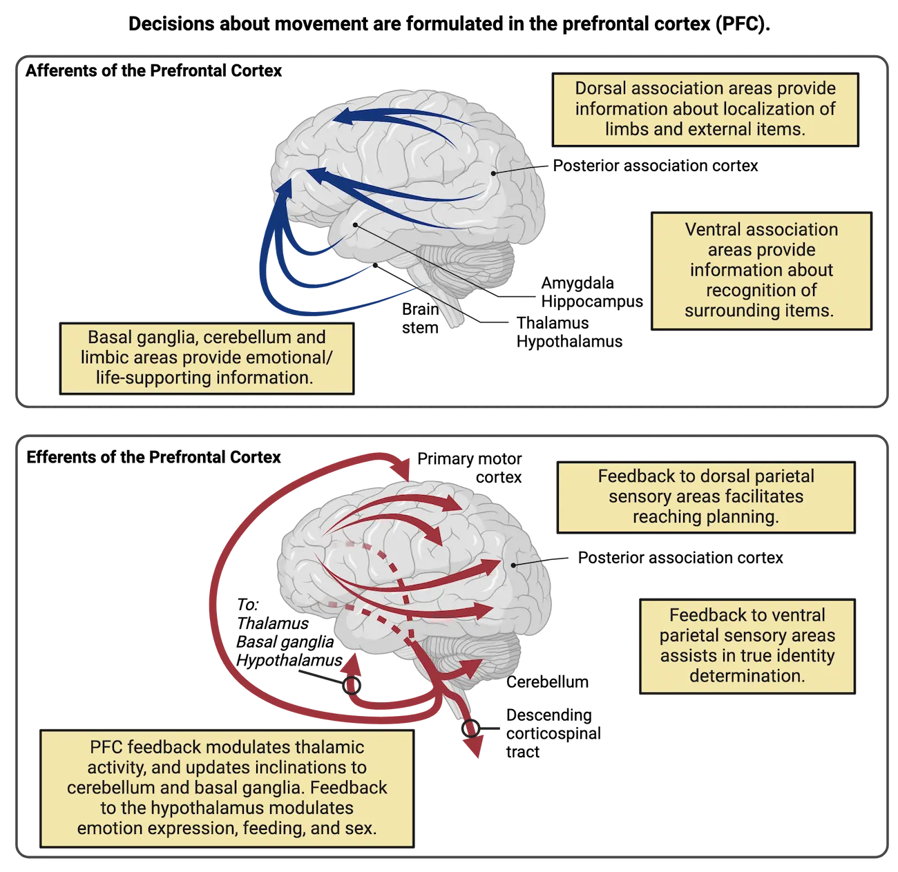
Premotor cortices
Once an executive decision about a desired movement has been made in the PFC, the conscious compilation of movements into useful patterns occurs in the premotor cortices. These cortices reside in the lateral and dorsal regions of the frontal lobe, behind the prefrontal areas. This general region compiles movements by combining multiple muscle sets across space (different simultaneous contractions combining, adjusting movement trajectory) and time (different movements in sequence). See Premotor versus motor processing for an example of these functions, as gymnast Simone Biles plans a complex flip. Her premotor cortex will be essential for planning force and distance while her supplementary motor area stitches together the order of movements she will need.
![Top: Left: Photo of gymnast Simone Biles's face/head. Thought bubble above her head indicate 'premotor cortex: planning for and distance' and 'supplementary motor area: planning order of operations.' Right: Picture of Simone Biles flipping in the air. text indicates 'Primary motor cortex: engage extensors and flexors to move'. Bottom: Left: Diagram of human brain surface with highlighting to show premotor area, supplementary motor area and primary motor cortex. Right: coronal view of major divisions of primary motor cortex, showing drawings of represented body parts lying along the surface of the cortex.](../assets/textbook/img/Image-10.14_Premotor-versus-motor-processing.webp)
Of course, Simone Biles has done these flips many times. Her repeated practice has made much of her motor planning subconscious. This process of honing motor movements into habitual, subconscious patterns relies strongly on interactions of premotor cortices with other cortical structures such as the striatum (basal ganglia), and cerebellum. These two areas become involved more heavily during acquisition (where movement skills are packaged), consolidation (where movement skills are honed into quickly accessible repertoire habits or motor programs), and retention (where established repertoire movements are stored so they can be accessed quickly in response to key circumstances). Both primates and rats suffer deficits in learning formal, visually directed motor tasks after the removal of premotor cortices – further evidence of this region's critical role in retaining learned skill and movement adaptation for future endeavors.
The premotor areas' primary output is regulation of M1 neurons, which connect extensively to LMNs. For many years, the premotor cortices were believed to influence motor movement exclusively via their regulation of the primary motor cortex. However, more recent evidence shows stimulation of the premotor cortices yielding combinations of motor responses in harmony across both sides of the body. Thus premotor cortex engages built-in and learned complex combinations of actions, within an organism's more sophisticated repertoire (Geyer et al., 2000). Premotor cortices send descending axons into the spinal cord, meaning that M1 is not the only direct regulator of LMNs. This is important to keep in mind.
The basal ganglia
This cluster of subcortical nuclei includes the main input regions, caudate and putamen nuclei, with circuit components extending into the external and internal globus pallidus, subthalamic nucleus, and substantia nigra reticulata. Importantly, in most animal species, the caudate and putamen nuclei are not distinct. Therefore, they have been largely treated as a similar pair and frequently referred to together as the striatum. There appear to be several parallel "loops" traversing the basal ganglia, beginning with afferents from various areas of the cortex entering and stimulating the main input cells of the striatum. The final output nuclei of the motor loops of the basal ganglia send inhibitory inputs into the movement area of the thalamus, the ventral anterior/ventrolateral (VA/VL) complex (ventral anterior and ventrolateral thalamic nuclei).
Here, we will focus on the role of the basal ganglia in the conscious support of body movement. Recall that conscious actions are guided by plans formulated and relayed by the frontal cortex. Therefore, structures involved in the motoric basal ganglia loops start with afferents from most of the cortex, including sensory and motor areas converging on neurons throughout the caudate and putamen (as stated, usually understood as a group). The subsequent pathways through the basal ganglia can be divided into a direct pathway and an indirect pathway, both of which end up affecting firing of neurons in the VA/VL thalamic complex. The VA/VL complex represents a distinct waystation that specifically targets movement control areas in the cortex, primarily premotor areas. The net effect of activity in the direct pathway is to promote VA/VL firing and therefore planned movement. The net effect of the indirect pathway is to inhibit VA/VL firing and thereby suppress unwanted movement (Direct vs indirect motor pathways). Balance of activity in each of these pathways helps us move how we want, while preventing undesired movements. We will see later how specific diseases impacting each pathway can lead to different symptoms.
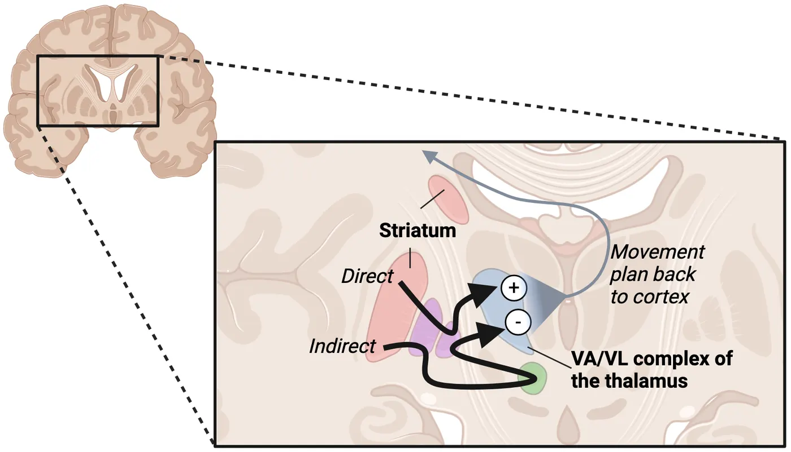
Both the indirect and direct pathway use disinhibition as an important part of how their circuit activity is controlled. To better understand disinhibition, we will look more closely at the direct pathway (see Basal ganglia circuits).
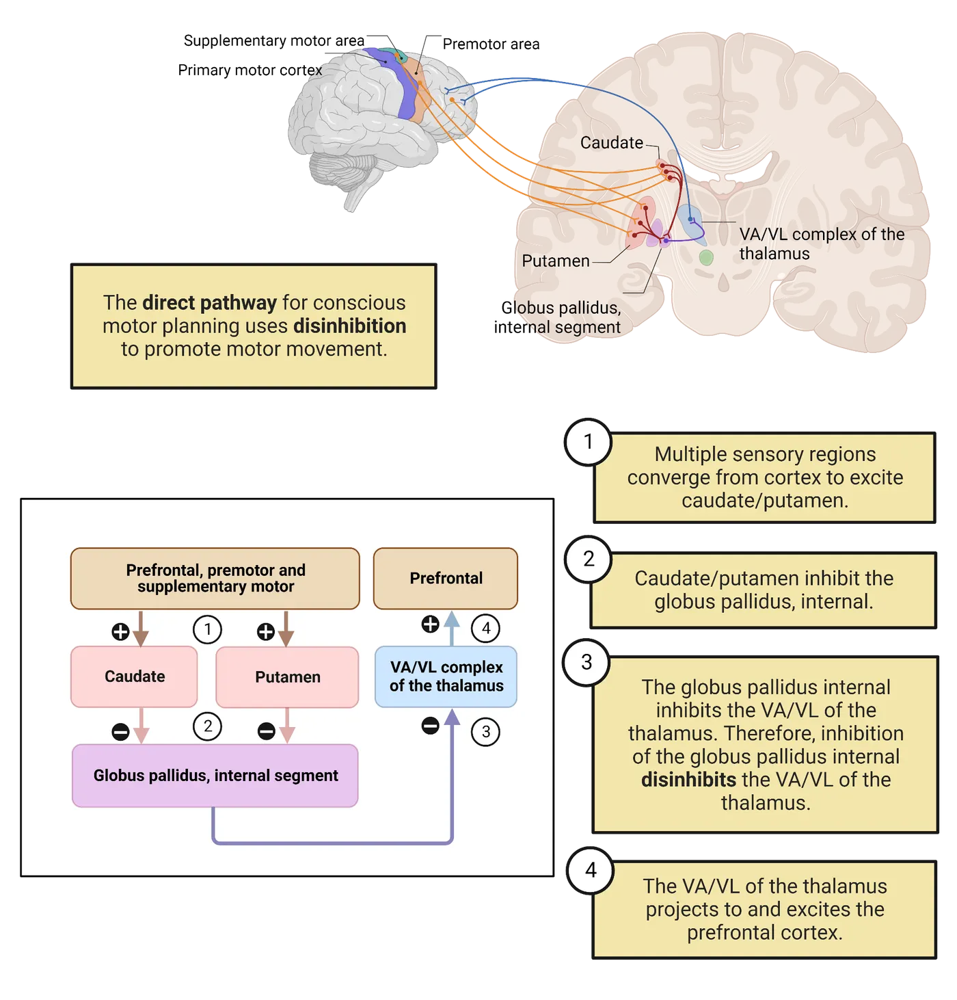
In the direct pathway, the excitatory input from the frontal cortex areas synapses on inhibitory efferent neurons within the striatum. Those inhibitory striatal neurons then send afferents to the globus pallidus internal (GPi). These GPi neurons are also inhibitory and connect to the VA/VL complex of the thalamus via their own inhibitory efferent neurons. In Basal ganglia circuits, a simplified conscious motor planning diagram for the direct pathway emphasizes the prefrontal cortex because it is where conscious decisions tend to occur, confirming your intended actions and goals along the way. Overall, this inhibition of GPi output neurons results in disinhibition of the movement-related thalamic nuclei in the VA/VL complex. The thalamic cells send excitatory outputs towards the premotor/supplementary motor cortices for body movement, or to the brainstem centers for eye and head movement (Groenewegen, 2003). Planned movement is thereby promoted.
The indirect pathway uses similar processes but has more complex circuitry, involving additional brain nuclei and more inhibitory/disinhibitory connections than in the direct pathway. The end result of exciting the indirect pathway is inhibition of the VA/VL and prevention of overactivation of cortical motor areas or the diminishment of unwanted movements. One structure within the indirect pathway, the subthalamic nucleus, adds an excitation to the equation which increases how much suppression takes place. Malfunctioning here can lead to ballistic thrusting movements and is often blamed for the inappropriate tremors occurring in diseases of the basal ganglia.
Establishing habits and motor sequences
While we've described conscious involvement, the basal ganglia does also maintain heavy involvement in subconscious skill learning and movement control. Sometimes, we have an explicit or conscious desire to repeatedly produce a specific movement sequence that is learned and established via consolidation as an accessible circuit coordinating multiple muscles in a sequence or ensemble. A motor sequence represents a timed pattern of muscle activation sequentially, like finger movements on a piano in a Beethoven concerto. A muscle ensemble represents a group of muscles activated simultaneously to either create a specific movement trajectory or ensure other parts of the body remain stiff while limbs maneuver, like a wrestler using arms, legs, and back contractions to pin an opponent. The basal ganglia are essential for using motor sequences and muscle ensembles in habitual or learned movements. Specifically, the basal ganglia help to select cooperative muscle ensembles and inhibit unhelpful muscles when executing a learned motor skill.
To understand the role of motor system learning, imagine how we might learn to draw cartoon characters like Snoopy or Garfield. Our first tries are often embarrassing. To create these drawings free-handed, we must coordinate the actions of many muscles in our arms and hand. When should we select "this" muscle, or "that," or combinations of both? The basal ganglia circuitry focuses on proper selection of either individual muscles or groups that can produce the desired line in the right direction (drawing Snoopy's rounded snout, or Garfield's stripes or whiskers; see Zham et al., 2017). If the wrong muscles are selected, or the groups of muscles compete rather than cooperate, the drawing will look shaky and wobbly, and we might be likely to discard it rather than showing our friends. After learning to select the right muscle groups for each part, we can proudly show our friends the results. The basal ganglia can select which muscle groups to activate in sequence, so muscle ensembles combine with motor sequences. The package becomes a learned habit, re-played as circumstances demand (piano playing, wrestling).
Some disease states may result from inappropriate activation of motor sequences in basal ganglia circuitry. For example, some researchers suggest that Tourette's syndrome sudden-onset expressions ("tics" or bursts of uncontrolled movement), and dystonia (writhing movements and awkward postures), stem from over-reactive sensitivities at the level of the caudate and putamen, making "chunks" of unintended movements essentially habitual (Mink, 2018; Graybiel and Mink, 2009; Albin and Mink, 2006). The circuitries controlling habitual learned movements are substantially more complex than the conscious motor circuits, involving more sub-structures within the basal ganglia. While we will not describe those complexities here, your author hopes that you will pursue more advanced classes where these circuits are covered, as they are exciting, and hotly debated.
Disorders of the basal ganglia
We shall now describe two devastating diseases, Huntington’s and Parkinson’s, to emphasize functions that rely on the basal ganglia. Some readers may know people who suffer from various stages of movement control deterioration in these disorders. Neither Huntington’s nor Parkinson’s patients can engage proper motor sequences on demand while suffering their deficits (Moisello et al., 2011). Both diseases involve basal ganglia dysfunction, but result in different symptoms due to loss of different parts of the basal ganglia circuitry.
Patients with Parkinson’s disease experience severe, progressive loss of motor control. This includes (1) shakes or tremors; (2) “cogwheel” rigidity, a special kind labeled to emphasize the interspersion of stiffness with short releases, much like clock minute hands clicking into place; and (3) postural instability appearing to derive mostly from insensitivity to vestibular and muscular cues (Sveinbjornsdottir, 2016). While the tremors appear outwardly like other basal ganglia diseases such as Huntington’s, they often manifest more at rest when no effort to engage movement exists (resting tremor), compared to action tremor associated with cerebellar ataxia, discussed later.
Parkinson’s disease is caused by cell death of the dopaminergic neurons originating in the midbrain substantia nigra pars compacta, projecting into the caudate and putamen (Parkinson’s disease anatomical pathology; Fahn 2008).
![Top: A horizontal slice of brainstem showing a healthy example substantia nigra (with black cell bodies) on the left and substantia nigra with Parkinson's disease (and very few black cell bodies) on the right. Bottom: Left: a sagittal surface view of a human brain, with major dopaminergic pathways drawn from midbrain regions, projecting to cortex and striatum. Right: a list of the dopaminergic pathways affected by Parkinson's disease. Early/mid: Nigrostriatal; Late: Mesocortical, mesolimbic, tubero-infundibular](../assets/textbook/img/Image-10.11_Parkinson_s-disease-anatomical-pathology.webp)
Dopamine contributions to basal ganglia function are complex. As is usually the case with a modulatory transmitter, it largely adjusts the way glutamatergic excitation engages postsynaptic cells. In this case, the postsynaptic cells are inhibitory efferent neurons in the striatum (Surmeier, 2011). The interactions of dopamine with the striatum neurons are complex but their net effect is to stimulate the parts of the caudate and putamen that promote movement behavior, i.e., the direct pathway striatum neurons (follow the circuit diagram in Parkinsonian state of basal ganglia; Wall et al., 2013, Surmeier, 2011). Its loss in Parkinson’s disease makes movement much more difficult.
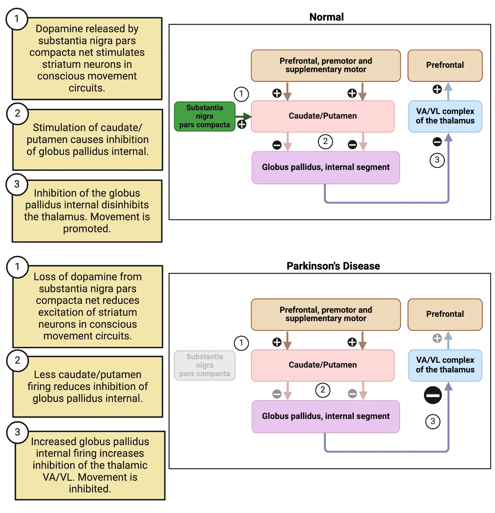
One major treatment for Parkinson’s patients is Levodopa (L-DOPA). It is a precursor molecule of dopamine derived from the amino acid tyrosine and is used by the enzymes within dopaminergic neurons to produce dopamine (see L-DOPA and Parkinson’s disease treatment and Introduction).
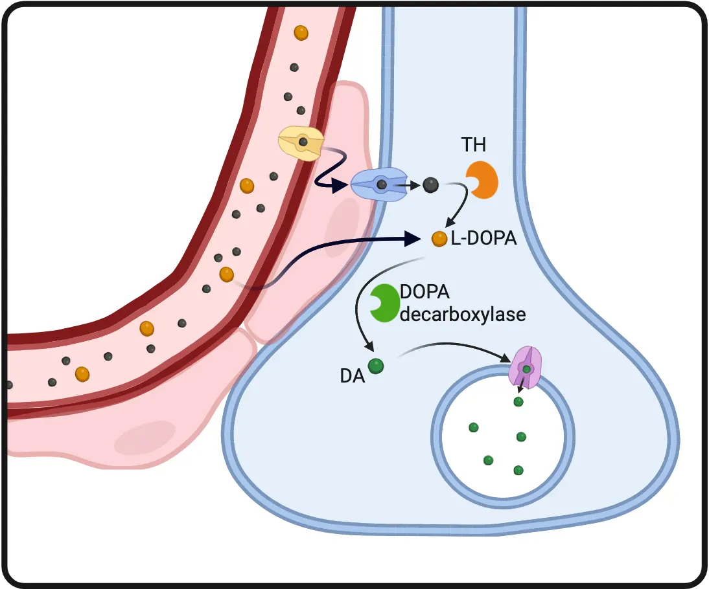
L-DOPA is also BBB permeable, so L-DOPA in the blood can get into the dopaminergic neuron terminals and boost dopamine synthesis.
When this drug is administered, there is typically an initial surge of dopamine, yielding improved movement. However, sometimes there’s a tendency to overdo. This is seen as impulsivity or a tendency to take more risks behaviorally, but that tapers off as the acute effects diminish (Voon et al., 2017). The greater propensity for movement is typically referred to as an “up, on, or acute” state by comparison to the “down, off, or long-term state” when the L-DOPA wears off (Albin & Leventhal, 2017).
The inconsistency of L-DOPA effects over time is one reason alternative treatments, like stem cell transplantation, are sought for Parkinson’s, which may provide more consistent dopamine presence (Sandstrom et al., 2018). Dopaminergic replacement cell populations derived from stem cells are typically placed into patients’ putamen, because this structure typically receives the highest dopaminergic input, and is most closely associated with movement control (Freed et al., 2011). Also, growth of new axons is considerably challenged across long distances in the adult brain, though strategies for guiding axon growth from the more appropriate substantia nigra pars compacta are being developed (e.g., Zang et al., 2013). Other treatments including a thalamotomy are more radical. In thalamotomy, distinct input regions of the thalamus are targeted for destruction, eliminating the supportive control provided by the compromised basal ganglia. While actors like Michael J. Fox opted for this treatment due to its general preservation of facial expression control, it is not an ultimate cure as the movements produced are often jerky and challenged. Restoring more natural or appropriate basal ganglia activity would be preferable to eliminating its influence, but this remains a challenge to achieve.
Deep brain stimulation is another potential treatment for Parkinson’s disease. In this treatment, electrodes are placed strategically into either the subthalamic nucleus, the internal globus pallidus (GPi) or select regions within the VA/VL thalamus that override the internal signaling strategy provided by the basal ganglia. Deep brain stimulation is particularly helpful in treating the resting tremors that are common in those with Parkinson’s disease. The resting tremors in Parkinson’s disease arise due to complex dysregulation of input to the GPi/VA/VL. Proper placement and high frequency stimulation of electrodes in these areas, supported by power coming from a battery that is typically placed under the skin around the shoulder, can significantly reduce these tremors (Deep brain stimulation and Parkinson’s disease).
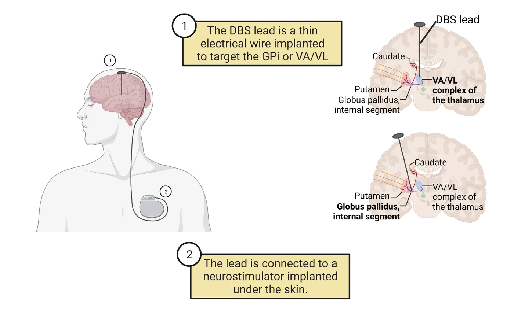
Huntington’s disease (HD) arises from a dominant genetic mutation on the huntingtin gene within the autosomal portion of chromosome four. Though the genetic mutation is present from conception, the symptoms develop over a lifetime (Walker, 2007). Being autosomal dominant means that a person only requires one copy of the huntingtin gene to develop HD and a parent with HD has a 50% chance of passing on their mutated gene to their offspring. In HD, cognitive difficulties often arise first in the chain of symptoms since the basal ganglia are involved in strategic thinking and developing capacity to adapt thinking to new circumstances, given its interaction with prefrontal and premotor cortices (Novak & Tabrizi, 2011). Typically, movement problems arising in later adulthood, usually around 50-60 years of age, elicit more profound diagnostic concerns.
HD-related movement problems include a sort of undulation of limb and facial movements as if these cannot be suppressed. Limb movements appear dance-like and are referred to as chorea, though they are far from purposefully choreographed or intended (Thompson et al., 1988). At later stages, body movements stiffen, challenging the coordination of swallowing-related pharynx and esophageal muscles (dysphagia). This leads to problems of aspiration and choking (Heemskerk & Roos, 2011).
HD symptoms occur because of the progressive death of striatal neuron cells. The loss of striatal neurons destroys basal ganglia function. The neurons that perish early and more prominently represent those striatal neurons within the indirect pathway, the pathway that primarily suppresses unwanted movement. Progressive deterioration of indirect basal ganglia pathway leaves the VA/VL of the thalamus increasingly disinhibited and yields increased and uncontrolled muscle engagement until the antagonists become overstimulated, stiffening limbs by simultaneous activation (Joel, 2001; Nair et al., 2021). This overstimulation is evidenced as increasingly intense chorea and slowed movement (bradykinesia). Harkening back to drawing Snoopy, consider either unsuppressed wild movements of muscles, or muscles getting locked into tug-of-war battles rather than smoothly guiding the pen. Snoopy's snout would either look too short, or overly long.
There are no directly targeted cures for Huntington's disease right now. The absence of a cure has made diagnosis and genetic testing for Huntington's disease ethically and emotionally complicated. Without clear treatments available, a child with a parent showing symptoms of Huntington's has a dilemma. They have a 50% chance of carrying the mutated gene. If they are tested and have the Huntington's mutation, there is little they can do, so many patients may decide they don't even want to know. Hopefully that dilemma will be resolved in the future, as there are several treatments being actively worked out. Given the disease derives from a distinct mutation in the huntingtin gene, involving an inappropriate expansion of the genetic code, there have been some ideas about either suppressing mutated genes or targeting the mutation with gene therapy for heterozygotes. Transplantation of stem cells into Huntington's patients has also been attempted with varied success (Rosser & Bachoud-Levi, 2012). Currently, however, standard of care is pharmacological treatments, such as tetrabenazine, to reduce symptoms. Tetrabenazine is a vesicular dopamine transporter blocker that prevents the filling of dopaminergic synaptic vesicles (Bonelli, & Wenning, 2006). These drugs suppress chorea because they tend to dampen the movement initiation of the basal ganglia-based motor driving mechanisms. Dopamine net diminishes the activity in the indirect pathway, thereby promoting direct pathway initiation of planned movements. However, these drugs also tend to spread and have high cognitive side effect potential such as depression or other tensions (Paleacu, 2007). Much work is needed to improve treatment of Huntington's disease.
The cerebellum
The cerebellum sits behind and below the cerebrum, atop the brainstem. Its folia look like two lateral bunches of curled-up spaghetti. Its main function is to smooth-out our behavioral efforts. It does this by either pre-processing movement intentions building in the premotor cortical areas, or via upper-level imagined anticipation. For example, if you contemplated a large rock in front of you in the middle of a creek, and whether you might be able to land on it to cross the creek. Alternatively, to improve attempted actions, we process the differences between intended and actual movements, and adjusting signal durations/intensities until proprioception from afferent spinocerebellar tracts says we "nailed it" (Stecina, et al., 2013; Therrien & Bastian, 2019). You might compliment someone with "you have an efficient cerebellum" as a neuroscientist exclusive way of implying they move with sophistication.
How the basal ganglia and cerebellum divide their supportive roles in movement has intrigued neuroscientists for years. The functions of the two different regions are difficult to disentangle (Proville, et al., 2014). To simplify, coordinating necessary muscle selection seems to be the specialization of the basal ganglia, while coordinating contraction timing and degree requires the cerebellum. Analogous smooth and elegant line production while drawing Snoopy requires sophisticated starting and stopping, and smooth transitions of pen direction, to avoid jerky images (see Fujisawa & Okayama, 2015). Another way to think about it is that the basal ganglia "chunk" flexors here and extensors there, while the cerebellum smooths out their actions. Such responsibilities are emphasized more strongly in either structure, though in any one effort we will utilize both structures.
The cerebellum provides its smoothing functions (while you are drawing Snoopy or doing any number of other tasks) through extensive error correction. A motor error occurs when the way we actually move does not match where we intended to move. Detecting errors therefore requires at least 2 streams of information: one about action and the other about intention. Intention comes to the cerebellum from the brain via projections from the pontine nuclei in the brainstem, or from spinal cord regions where descending UMN tracts depict what we intend to do (either consciously or implicitly) to anticipate goals which also ascend the spine into the cerebellum. The cerebellar input about movement derives from proprioception feedback (largely muscle stretch), which depicts moves that happened, ascending from the spinal cord via spinocerebellar tracts (or trigeminal that monitors head/face movement). Progressively, the cerebellum compares these two components and adjusts the prompting UMN signals until we nail it (intended = actual).
The role of the cerebellum in providing smooth integration of motor effort timing and intensity can be appreciated when it is impaired, as happens in cerebellar ataxia or when someone consumes alcohol (Sokolov et al., 2017; Spencer et al., 2005; Bareš et al., 2009). Cerebellar damage (cerebellar ataxia) causes dysmetria, where one exhibits a "drunken gait" because foot placement can't be error-corrected or smoothed, and intention tremor where movements overshoot stopping points and oscillate around target destinations (Schwartze et al., 2016). It is important not to conflate alcohol effects with cerebellar damage. Drunkenness derives from the way alcohol enhances the effects of GABA across wide regions of both motor control and decision-making circuits. Cerebellar damage specifically eliminates the controlled-targeted landing of limbs to the right place. Cerebellar ataxia is analogous to rendering smooth limousine driving into two choices: full throttle or slamming on breaks. Yet visually, walking while drunk and walking with cerebellar ataxia appear outwardly similar. The cerebellum constantly contributes to posture alignment behind the scenes (subconsciously) so removing these contributions causes loose and wavy lack of balance. People can experience ataxic gait for multiple reasons. Any ataxic walking (caused by cerebellar damage or any other source) looks like feet land where they do by accident, rather than on purpose. Cerebellar ataxic gait occurs because the cerebellum can't correct the extent of movements properly, emphasizing approximations (see this video on Ataxia).
Corrective actions incorporated with ongoing movement, not after we perceive movement
Just like the basal ganglia, the cerebellum supports movement control by tweaking the thalamic VA/VL complex, though synapsing through distinct circuits. The cerebellum is inspired into action in relation to initial learning, and later provides anticipatory adjustment signals that integrate into ongoing movement but are sent prior to or in conjunction with the UMN signals that descend to initiate LMN actions. Most cerebellum contributions are made subconsciously and become integrated into movements we subsequently produce (the lack of sufficient adjustment is shown when errors occur, such as ataxia). Success in generating desired smooth movements, ending without jerky shakes, requires error corrections to be incorporated before movement begins. If we had to wait for proprioceptive feedback before correcting, there would always be a “jerk-back” effect due to delays inherent in sensory systems. This can result from conscious movement monitoring. Conscious proprioception (cortical) is slower than ongoing movements, so modifications come post-movement, making it jerky and uncoordinated. Damaged cerebellum patients are limited to this, so when their conscious stream is distracted, they produce more movement errors because their cortex cannot multitask well (Brunamonti, et al., 2014). Thus, a well-primed (skill consolidated) healthy cerebellum recognizes the need, then delivers its adjustments along with subsequent UMN-driven movement efforts rather than correcting errors after the fact. It learns while we do behind the scenes to determine how much boosting or tapering is necessary, and subsequently contributes these adjustments to future movements. Imagine these contributions behind the scenes of established Olympic floor moves, or the slight-of-hand demonstrated by a seasoned magician (Dahms et al., 2020).
Practicing and imagining success
It’s important for new behavior to start off slowly, allowing sufficient time for proprioceptive sensory feedback to reach the CNS and become conscious perception. We do this all the time when we are learning how to move in specific ways. For example, choreographed fight moves à la Jackie Chan are typically rehearsed slowly before filming so actors can anticipate blows and pull back to “act” hit. By going slowly, we have time to consciously perceive motor errors and use our cerebellar processes to correct them. Through this slow practice, the cerebellum helps us learn how to execute movements faster and faster, with less conscious perception of proprioception needed to keep our bodies on track. Notably, even imagined movements can play a role in this learning—a mental rehearsal without physical engagement (Decety & Ingvar, 1990, Jackson et al., 2003). Actors, dancers, skaters, and sports professionals do this all the time. The performance improvements from imagined practice are real, not illusory, as they entrain the cerebellar circuitry support of cerebral movement control via the same circuitry that adapts to actual movement.
Primary motor cortex
The primary motor cortex (M1) region receives our “upper-level” synaptic progression last. This progression collects and coordinates movement intentions before sending those UMN compilations down to the brainstem and spinal cord for movement generation by the LMNs. M1 is also the first cortical area with full lateralization of limb and face movement control: M1 neurons on the right side of the brain all target LMNs for the left limbs and facial area, while M1 neurons on the left side of the brain all target LMNs for the right limbs and facial areas. This lateralization contrasts with the premotor regions we discussed so far, which engage bilateral control. M1 lateralization is restricted to limbs and facial lateral areas, not the trunk, which is generally ipsilaterally controlled.
Primary Precentral Gyrus Organization
The posterior frontal cortex has a major crease, the central sulcus, dividing the precentral (green in Primary motor cortex) and postcentral gyri.
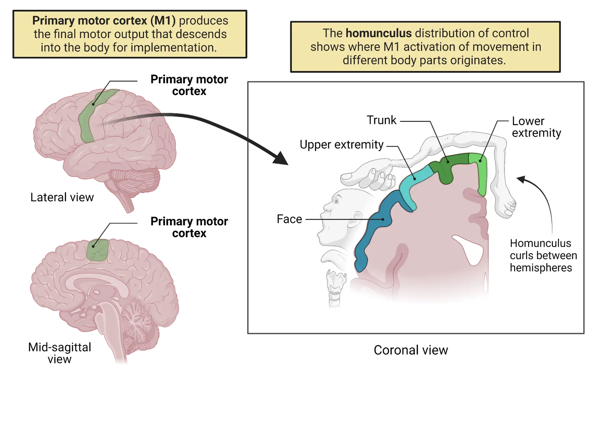
This strip, from between the hemispheres out laterally, ending just above the lateral fissure (defining the top of the temporal lobe), contains the primary drivers of voluntarily organized/coordinated movement known collectively as the primary motor cortex. The neurons of the primary motor cortex are arranged in a homunculus. This arrangement is essentially a map of a little person lying across the precentral gyrus, so toe control is buried between the hemispheres. This map was famously created by neurosurgeon Wilder Penfield, who assessed movements when brain regions were stimulated during surgeries correcting epilepsy and made direct recordings during movements (Penfield and Rasmussen, 1950). The idea of a homunculus depicts the “person” as a distorted image made up of enlarged areas where more neuronal space engages with specific moveable body parts. The complexity or subtlety of movement of any body part tends to engage larger numbers of neurons as this attribute goes up, so the eventual map of a person has a large tongue, huge lips, prominent face around the forehead, huge hands and feet, with a smaller torso, limbs, and joints, according to the degree of movement sophistication possible. The motor homunculus is to movement sophistication as the somatosensory homunculus is to somatosensory density (see Introduction).
Descending motor projections
The primary motor cortex neurons send their axons out to the brainstem and spinal cord via three tracts (see Corticospinal motor pathways for the body).
![Upper left inset: Coronal view of major divisions of primary motor cortex, showing drawings of represented body parts lying along the surface of the cortex. Major neuronal pathways are shown projecting down to the spinal cord. Rest of diagram: Neural pathway diagram, showing brain original of corticospinal tracts, projecting down through the spinal cord, then synapsing on motor neuron in the ventral spinal cord grey. From there, lower motor neurons project out of the ventral spinal cord roots, towards the periphery.](../assets/textbook/img/Image-10.07_Corticospinal-motor-pathways-for-the-body.webp)
- The corticobulbar (or corticonuclear) tract, carries descending efferents from the cortex, synapsing on brainstem nuclei serving regions of the jaw, face, ear mechanisms, for gagging or swallowing, or crinkling our noses. Corticobulbar tracts largely provide bilateral support, where each side directly serves ipsilaterally, and crosses over at the level of various nuclei to the contralateral side. The exception to this rule would be the descending tracts subserving the facial nucleus, specifically the lower part of the face, which is exclusively contralateral (Patestas & Gartner, 2016). We're overlooking autonomic patterning aspects of this projection to focus on controlled movement.
- The lateral corticospinal tract is the major descending tract for body limbs. It crosses almost entirely to the other side of the body to control the contralateral (opposite side from originating hemisphere) limbs, mostly the arm/hand/fingers and leg/foot/toes.
- The anterior corticospinal tract is a smaller but important tract responsible for controlling trunk muscles and more medial aspects. While some of this tract decussates (crosses over) at the level of the spinal cord in the ventral white matter as shown in Corticospinal motor pathways for the body, a majority subserves the ipsilateral side.
The upper part of our body (head) is largely controlled via cranial nerves derived from the brainstem and therefore the corticobulbar tract. The two corticospinal tracts descend to different levels of the spinal cord. Within the spinal cord, these tracts interact with LMNs and the circuitry making up the reflex architecture (also used to engage the knee-jerk, or withdrawal reflexes, utilizing local spinal circuitry described above) to control the lower parts of our bodies such as limbs and trunk.
Why do some descending UMNs control need to cross over to operate the opposite side of the body? One simple explanation may be that visual information passing through lenses of your eyes is flipped (see Introduction). Events occurring to our left pass to the right sides of our retinae. The right sides of each retina connect with the right hemisphere, while the left connects with the left. However, the information they process is relevant to the opposite sides of our bodies. This probably created pressure for natural selection to derive a map of limb control so each hemisphere could control the opposite side.
Moving Beyond Vector Trajectories into Controlling Robot Arms
In the previous section, we discussed how the pioneering work of Georgopoulos pointed towards this key cortical element of “voting populations.” More recently, new and fascinating cutting-edge things have been happening to build off his work. By studying consensus of neuronal activities and how they link to vector trajectories, researchers have begun to be able to predict where limbs might go based on neuronal activity! Once you can predict what neuronal activity does, it becomes possible to tap in to those neurons to recreate movements. This basic idea is what underpins many modern efforts to link robot prosthetics to the human brain.
Many forms of brain or spinal cord damage can render a person unable to move any limbs despite owning an active and intact brain (quadriplegic). Neuroscientists such as Andrew Schwartz and others have been working to turn that remaining ability to direct movements in the brain into real movements of robotic prosthetic devices. This work is all based in the original concepts derived from Georgopoulos and has now yielded robotic arms that can respond to recordings from a patient’s brain and engage complex arm and hand type movements to select, grasp, and move objects! The details of how two human subjects with quadriplegia were implanted with specialized electrodes over the arm-related region of their M1 homunculi and subsequently gained considerable control over an attached robot arm are originally described in Lancet (Collinger et al., 2013). Since this initial proof-of-principle, improvements have been made. For example, a patient in 2015 received a version of this system that was not just unidirectional—taking motor commands and linking them to the prosthetic. This newer version also incorporated input from sensory information. Remember back to our example of a monkey swinging through the trees. To swing, grasp and release well, the monkey integrated several sources of touch information. Grasping without feeling the grasp would make branch swinging a far greater challenge for the monkey. The same applies to patients with prosthetic limbs. Adding touch feedback greatly improved the ability of the patient to use their limb. These devices, adjusted for circumstances, are moving outside of a theoretical possibility into a distinct therapeutic option reality! If movement practice feedback could also be incorporated, it is conceivable that practiced learning could get such patients back to cooking in the kitchen!
Summary
Upper system control, via upper motoneuron sources, combines the efforts of the prefrontal cortices, the basal ganglia, the cerebellum, the premotor cortices, and the primary motor cortices. Initial maneuvers based on our needs are formulated within the prefrontal cortices. Inappropriate or inconsiderate behaviors may stem from damage within prefrontal cortex in general, or more specifics may be distorted as plans get further formulated in premotor cortices. After a big picture “what do we want” is formulated, movements to accomplish this grow in increasingly specific ways, like deciding which limbs, directions, and sequences of movement will accomplish our objectives. We build repertoires within the basal ganglia. The premotor cortices dip into the underlying striatum to engage circuits compiling and connecting movement repertoires in conjunction with the correct groups of muscles (ensembles) for the task.
As the details of movement plans are “fleshed out,” the basal ganglia loop feeds modulatory control back into the premotor cortices, and the cerebellum becomes involved by increasingly anticipating/appreciating how the intensity of movements needs to be tailored for smoothness. The cerebellum orders and manages this effort, paying attention to limb location and possible adjustment. The compiled patterning, including smoothing from the cerebellum, is fed forward into the primary motor cortex, encouraging proper sets of UMNs to activate and promote preferred movements with the proper emphasis (likely continuously reinforced by the cerebellum).
M1 primary motor cortex neurons descend into the brainstem and spinal cord to elicit movements of either the head/viscera or the body/limbs. Thus, the planned movements are fed forward toward areas closer to their physical enactment. If these signals are blocked, weakness and spasticity result because this releases lower motoneurons from control of activation and reflex circuitry through which many descending upper motoneuron signals actuate control.
Key terms
acquisition, action tremor, anterior corticospinal tract, basal ganglia, bradykinesia, caudate, central sulcus, cerebellar ataxia, cerebellum, chorea, cogwheel rigidity, consolidation, corticobulbar (corticonuclear) tract, dysmetria, dysphagia, dystonia, globus pallidus (internal/external), homunculus, intention tremor, lateral corticospinal tract, Levodopa (L-DOPA), muscle ensemble, motor sequence, prefrontal cortices (cortex), premotor cortices (cortex), primary motor cortex (M1), putamen, resting tremor, retention, spinocerebellar tracts, substantia nigra pars compacta, Tourette's syndrome, ventral anterior/ventrolateral (VA/VL) complexReferences
Albin, R. L., & Leventhal, D. K. (2017). The missing, the short, and the long: Levodopa responses and dopamine actions. Annals of Neurology, 82(1), 4–19. https://doi.org/10.1002/ana.24961
Albin, R. L., & Mink, J. W. (2006). Recent advances in Tourette syndrome research. Trends in Neurosciences, 29(3), 175–182. https://doi.org/10.1016/j.tins.2006.01.001
Bares, M., Lungu, O. V., Husárová, I., & Gescheidt, T. (2010). Predictive motor timing performance dissociates between early diseases of the cerebellum and Parkinson's disease. Cerebellum (London, England), 9(1), 124–135. https://doi.org/10.1007/s12311-009-0133-5
Bonelli, R. M., & Wenning, G. K. (2006). Pharmacological management of Huntington's disease: An evidence-based review. Current Pharmaceutical Design, 12(21), 2701–2720. https://doi.org/10.2174/138161206777698693
Brunamonti, E., Chiricozzi, F. R., Clausi, S., Olivito, G., Giusti, M. A., Molinari, M., Ferraina, S., & Leggio, M. (2014). Cerebellar damage impairs executive control and monitoring of movement generation. PLOS ONE, 9(1), e85997. https://doi.org/10.1371/journal.pone.0085997
Collinger, J. L., Wodlinger, B., Downey, J. E., Wang, W., Tyler-Kabara, E. C., Weber, D. J., McMorland, A. J., Velliste, M., Boninger, M. L., & Schwartz, A. B. (2013). High-performance neuroprosthetic control by an individual with tetraplegia. Lancet (London, England), 381(9866), 557–564. https://doi.org/10.1016/S0140-6736(12)61816-9
Chirchiglia, D., Chirchiglia, P., Marotta, R., Pugliese, D., Guzzi, G., & Serena, L. (2019). The dorsolateral prefrontal cortex, the apathetic syndrome, and free will. Activitas Nervosa Superior, 61, 136–141. https://doi.org/10.1007/s41470-019-00057-w
Dahms, C., Brodoehl, S., Witte, O. W., & Klingner, C. M. (2020). The importance of different learning stages for motor sequence learning after stroke. Human Brain Mapping, 41(1), 270–286. https://doi.org/10.1002/hbm.24793
Decety, J., & Ingvar, D. H. (1990). Brain structures participating in mental simulation of motor behavior: A neuropsychological interpretation. Acta Psychologica, 73(1), 13–34. https://doi.org/10.1016/0001-6918(90)90056-l
Downey, J. E., Weiss, J. M., Muelling, K., Venkatraman, A., Valois, J. S., Hebert, M., Bagnell, J. A., Schwartz, A. B., & Collinger, J. L. (2016). Blending of brain-machine interface and vision-guided autonomous robotics improves neuroprosthetic arm performance during grasping. Journal of Neuroengineering and Rehabilitation, 13, 28. https://doi.org/10.1186/s12984-016-0134-9
Ekman, F. K., Ojala, D. S., Adil, M. M., Lopez, P. A., Schaffer, D. V., & Gaj, T. (2019). CRISPR-Cas9-mediated genome editing increases lifespan and improves motor deficits in a Huntington's disease mouse model. Molecular Therapy. Nucleic Acids, 17, 829–839. https://doi.org/10.1016/j.omtn.2019.07.009
Fahn, S. (2008). The history of dopamine and levodopa in the treatment of Parkinson's disease. Movement Disorders: Official Journal of the Movement Disorder Society, 23(Suppl 3), S497–S508. https://doi.org/10.1002/mds.22028
Freed, C. R., Zhou, W., & Breeze, R. E. (2011). Dopamine cell transplantation for Parkinson's disease: The importance of controlled clinical trials. Neurotherapeutics: The Journal of the American Society for Experimental NeuroTherapeutics, 8(4), 549–561. https://doi.org/10.1007/s13311-011-0082-9
Fujisawa, Y., & Okajima, Y. (2015). Characteristics of handwriting of people with cerebellar ataxia: Three-dimensional movement analysis of the pen tip, finger, and wrist. Physical Therapy, 95(11), 1547–1558. https://doi.org/10.2522/ptj.20140118
Georgopoulos, A. P., Caminiti, R., Kalaska, J. F., & Massey, J. T. (1983). Spatial coding of movement: A hypothesis concerning the coding of movement direction by motor cortical populations. Experimental Brain Research, 49(Suppl. 7), 327–336. https://doi.org/10.1007/978-3-642-68915-4_34
Georgopoulos, A. P., Kalaska, J. F., Caminiti, R., & Massey, J. T. (1982). On the relations between the direction of two-dimensional arm movements and cell discharge in primate motor cortex. The Journal of Neuroscience: The Official Journal of the Society for Neuroscience, 2(11), 1527–1537. https://doi.org/10.1523/JNEUROSCI.02-11-01527.1982
Georgopoulos, A. P., Kettner, R. E., & Schwartz, A. B. (1988). Primate motor cortex and free arm movements to visual targets in three-dimensional space. II. Coding of the direction of movement by a neuronal population. The Journal of Neuroscience: The Official Journal of the Society for Neuroscience, 8(8), 2928–2937. https://doi.org/10.1523/JNEUROSCI.08-08-02928.1988
Georgopoulos, A. P., Ashe, J., Smyrnis, N., & Taira, M. (1992). The motor cortex and the coding of force. Science (New York, N.Y.), 256(5064), 1692–1695. https://doi.org/10.1126/science.256.5064.1692
Geyer, S., Matelli, M., Luppino, G., & Zilles, K. (2000). Functional neuroanatomy of the primate isocortical motor system. Anatomy and Embryology, 202(6), 443–474. https://doi.org/10.1007/s004290000127
Graybiel, A. M. (1995). The basal ganglia. Trends in Neurosciences, 18(2), 60–62.
Graybiel, A. M. (1998). The basal ganglia and chunking of action repertoires. Neurobiology of Learning and Memory, 70(1-2), 119–136. https://doi.org/10.1006/nlme.1998.3843
Graybiel, A. M., & Mink, J. W. (2009). The basal ganglia and cognition. In Gazzaniga, M. S., Bizzi, E., Chalupa, L. M., Grafton, S. T., Heatherton, T. F., Koch, C., LeDoux, J. E., Luck, S. J., Mangan, G. R., Movshon, J. A., Neville, H., Phelps, E. A., Rakic, P., Schacter, D. L., Sur, M., Wandell, B. A. (Eds.), The cognitive neurosciences (pp. 565-585). Boston: MIT Press.
Groenewegen, H. J. (2003). The basal ganglia and motor control. Neural Plasticity, 10(1-2), 107–120. https://doi.org/10.1155/NP.2003.107
Heemskerk, A. W., & Roos, R. A. (2011). Dysphagia in Huntington's disease: A review. Dysphagia, 26(1), 62–66. https://doi.org/10.1007/s00455-010-9302-4
Jackson, P. L., Lafleur, M. F., Malouin, F., Richards, C. L., & Doyon, J. (2003). Functional cerebral reorganization following motor sequence learning through mental practice with motor imagery. NeuroImage, 20(2), 1171–1180. https://doi.org/10.1016/S1053-8119(03)00369-0
Joel, D. (2001). Open interconnected model of basal ganglia-thalamocortical circuitry and its relevance to the clinical syndrome of Huntington's disease. Movement Disorders: Official Journal of the Movement Disorder Society, 16(3), 407–423. https://doi.org/10.1002/mds.1096
Kennedy, S. D., & Schwartz, A. B. (2019). Distributed processing of movement signaling. Proceedings of the National Academy of Sciences of the United States of America, 116(52), 26266–26273. https://doi.org/10.1073/pnas.1902296116
Malloy, P., Bihrle, A., Duffy, J., & Cimino, C. (1993). The orbitomedial frontal syndrome. Archives of Clinical Neuropsychology: The Official Journal of the National Academy of Neuropsychologists, 8(3), 185–201.
Milner, B., & Petrides, M. (1984). Behavioral effects of frontal-lobe lesions in man. Trends in Neurosciences, 7(11), 403–407.
Mink, J. W. (2018). Basal ganglia mechanisms in action selection, plasticity, and dystonia. European Journal of Paediatric Neurology: EJPN: Official Journal of the European Paediatric Neurology Society, 22(2), 225–229. https://doi.org/10.1016/j.ejpn.2018.01.005
Moisello, C., Perfetti, B., Marinelli, L., Sanguineti, V., Bove, M., Feigin, A., Di Rocco, A., Eidelberg, D., & Ghilardi, M. F. (2011). Basal ganglia and kinematics modulation: Insights from Parkinson's and Huntington's diseases. Parkinsonism & Related Disorders, 17(8), 642–644. https://doi.org/10.1016/j.parkreldis.2011.06.021
Nair, A., Razi, A., Gregory, S., Rutledge, R. B., Rees, G., & Tabrizi, S. J. (2022). Imbalanced basal ganglia connectivity is associated with motor deficits and apathy in Huntington's disease. Brain: A Journal of Neurology, 145(3), 991–1000. https://doi.org/10.1093/brain/awab367
Novak, M. J., & Tabrizi, S. J. (2011). Huntington's disease: Clinical presentation and treatment. International Review of Neurobiology, 98, 297–323. https://doi.org/10.1016/B978-0-12-381328-2.00013-4
Paleacu, D. (2007). Tetrabenazine in the treatment of Huntington's disease. Neuropsychiatric Disease and Treatment, 3(5), 545–551.
Penfield, W., & Rasmussen, T. (1950). The cerebral cortex of man; A clinical study of localization of function. New York: The Macmillan Company.
Peterburs, J., & Desmond, J. E. (2016). The role of the human cerebellum in performance monitoring. Current Opinion in Neurobiology, 40, 38–44. https://doi.org/10.1016/j.conb.2016.06.011
Proville, R. D., Spolidoro, M., Guyon, N., Dugué, G. P., Selimi, F., Isope, P., Popa, D., & Léna, C. (2014). Cerebellum involvement in cortical sensorimotor circuits for the control of voluntary movements. Nature Neuroscience, 17(9), 1233–1239. https://doi.org/10.1038/nn.3773
Rosser, A. E., & Bachoud-Lévi, A. C. (2012). Clinical trials of neural transplantation in Huntington's disease. Progress in Brain Research, 200, 345–371. https://doi.org/10.1016/B978-0-444-59575-1.00016-8
Sacks, O. (1987). The disembodied lady. Chapter 3 in: The man who mistook his wife for a hat and other clinical tales. New York: Harper and Row Publishers.
Sandstrom, M. I., Anderson, K. A., Jayaprakash, N., Bhupal, P. K., & Dunbar, G. L. (2018). Plastic adaptation: A neuronal imperative capable of confounding the goals of stem cell replacement therapy for either Huntington's or Parkinson's disease. Chapter 2 (pp. 7-46), In Victor V. Chaban (Ed.), Neuroplasticity: Insights of neural reorganization. IntechOpen, London, UK. ISBN: 978-1-78923-194-6. Chapter doi: 10.5772/intechopen.71790.
Schwartze, M., Keller, P. E., & Kotz, S. A. (2016). Spontaneous, synchronized, and corrective timing behavior in cerebellar lesion patients. Behavioural Brain Research, 312, 285–293. https://doi.org/10.1016/j.bbr.2016.06.040
Smith, K. S., & Graybiel, A. M. (2016). Habit formation. Dialogues in Clinical Neuroscience, 18(1), 33–43. https://doi.org/10.31887/DCNS.2016.18.1/ksmith
Sokolov, A. A., Miall, R. C., & Ivry, R. B. (2017). The cerebellum: Adaptive prediction for movement and cognition. Trends in Cognitive Sciences, 21(5), 313–332. https://doi.org/10.1016/j.tics.2017.02.005
Spencer, R. M., Ivry, R. B., & Zelaznik, H. N. (2005). Role of the cerebellum in movements: Control of timing or movement transitions?. Experimental Brain Research, 161(3), 383–396. https://doi.org/10.1007/s00221-004-2088-6
Stecina, K., Fedirchuk, B., & Hultborn, H. (2013). Information to cerebellum on spinal motor networks mediated by the dorsal spinocerebellar tract. The Journal of Physiology, 591(22), 5433–5443. https://doi.org/10.1113/jphysiol.2012.249110
Strick, P. L., Dum, R. P., & Mushiake, H. (1995). Basal ganglia 'loops' with the cerebral cortex. In: Kimura, M., Graybiel, A. M. (Eds.), Functions of the cortico-basal ganglia loop. Tokyo: Springer. https://doi.org/10.1007/978-4-431-68547-0_7
Surmeier, D. J., Carrillo-Reid, L., & Bargas, J. (2011). Dopaminergic modulation of striatal neurons, circuits, and assemblies. Neuroscience, 198, 3–18. https://doi.org/10.1016/j.neuroscience.2011.08.051
Sveinbjornsdottir, S. (2016). The clinical symptoms of Parkinson's disease. Journal of Neurochemistry, 139(Suppl 1), 318–324. https://doi.org/10.1111/jnc.13691
Taira, M., Mine, S., Georgopoulos, A. P., Murata, A., & Sakata, H. (1990). Parietal cortex neurons of the monkey related to the visual guidance of hand movement. Experimental Brain Research, 83(1), 29–36. https://doi.org/10.1007/BF00232190
Therrien, A. S., & Bastian, A. J. (2019). The cerebellum as a movement sensor. Neuroscience Letters, 688, 37–40. https://doi.org/10.1016/j.neulet.2018.06.055
Thompson, P. D., Berardelli, A., Rothwell, J. C., Day, B. L., Dick, J. P., Benecke, R., & Marsden, C. D. (1988). The coexistence of bradykinesia and chorea in Huntington's disease and its implications for theories of basal ganglia control of movement. Brain: A Journal of Neurology, 111(Pt 2), 223–244. https://doi.org/10.1093/brain/111.2.223
Thompson, A. K., Pomerantz, F. R., & Wolpaw, J. R. (2013). Operant conditioning of a spinal reflex can improve locomotion after spinal cord injury in humans. The Journal of Neuroscience: The Official Journal of the Society for Neuroscience, 33(6), 2365–2375. https://doi.org/10.1523/JNEUROSCI.3968-12.2013
Vachey, G., & Déglon, N. (2018). CRISPR/Cas9-mediated genome editing for Huntington's disease. In: Precious, S., Rosser, A., Dunnett, S. (Eds.), Huntington’s disease. Methods in Molecular Biology, vol 1780. Humana Press, New York, NY. https://doi.org/10.1007/978-1-4939-7825-0_21
Voon, V., Napier, T. C., Frank, M. J., Sgambato-Faure, V., Grace, A. A., Rodriguez-Oroz, M., Obeso, J., Bezard, E., & Fernagut, P. O. (2017). Impulse control disorders and levodopa-induced dyskinesias in Parkinson's disease: An update. The Lancet. Neurology, 16(3), 238–250. https://doi.org/10.1016/S1474-4422(17)30004-2
Walker, F. O. (2007). Huntington's disease. Lancet (London, England), 369(9557), 218–228. https://doi.org/10.1016/S0140-6736(07)60111-1
Wall, N. R., De La Parra, M., Callaway, E. M., & Kreitzer, A. C. (2013). Differential innervation of direct- and indirect-pathway striatal projection neurons. Neuron, 79(2), 347–360. https://doi.org/10.1016/j.neuron.2013.05.014
Yin, H. H., & Knowlton, B. J. (2006). The role of the basal ganglia in habit formation. Nature Reviews Neuroscience, 7(6), 464–476. https://doi.org/10.1038/nrn1919
Zhang, C., Jin, Y., Ziemba, K. S., Fletcher, A. M., Ghosh, B., Truit, E., Yurek, D. M., & Smith, G. M. (2013). Long distance directional growth of dopaminergic axons along pathways of netrin-1 and GDNF. Experimental Neurology, 250, 156–164. https://doi.org/10.1016/j.expneurol.2013.09.022
Zham, P., Kumar, D. K., Dabnichki, P., Poosapadi Arjunan, S., & Raghav, S. (2017). Distinguishing different stages of Parkinson's disease using composite index of speed and pen-pressure of sketching a spiral. Frontiers in Neurology, 8, 435. https://doi.org/10.3389/fneur.2017.00435
Practice The multiple-choice and fill-in-the-blank questions for this section are interactive and live on OpenStax, so they are not carried here: open the book on openstax.org.
Adapted from Introduction to Behavioral Neuroscience by OpenStax, licensed under CC BY-NC-SA 4.0. Access for free at openstax.org. Changes: set in this site’s own pages and type, the images recompressed, the interactive exercises and videos linked rather than carried. This adaptation is offered under the same licence.